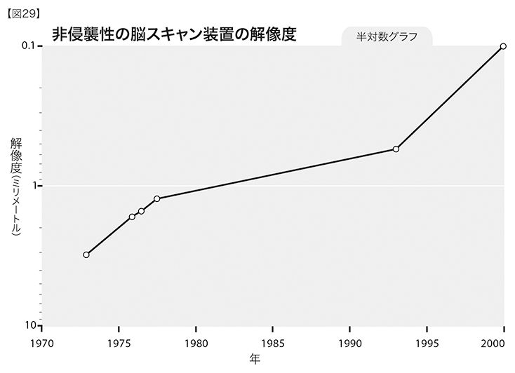
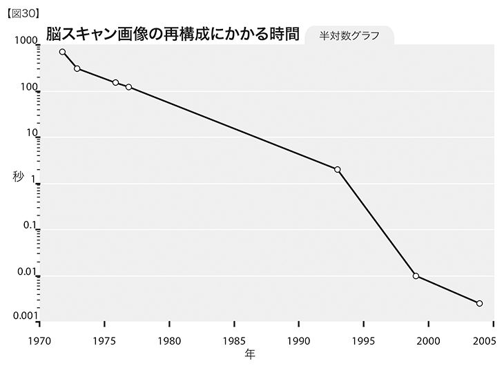
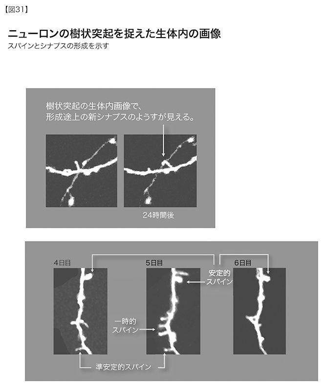
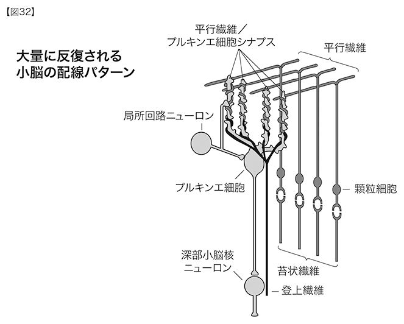
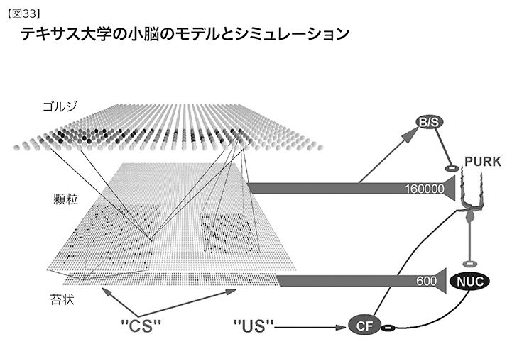
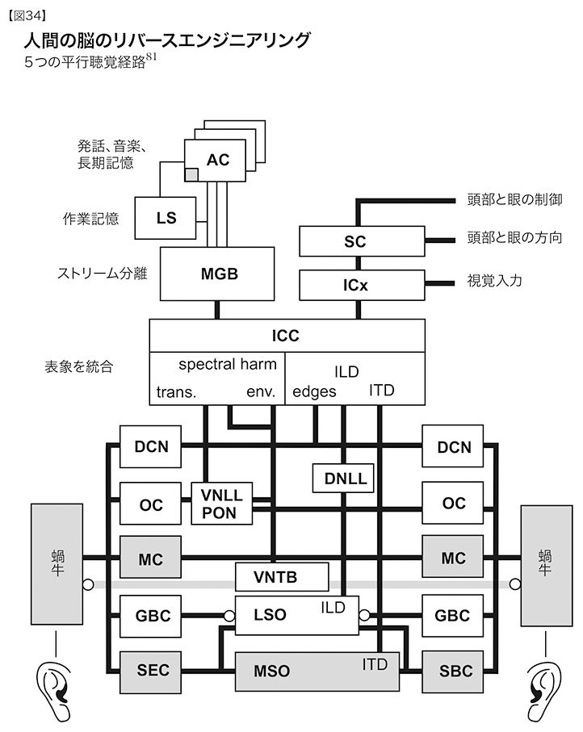
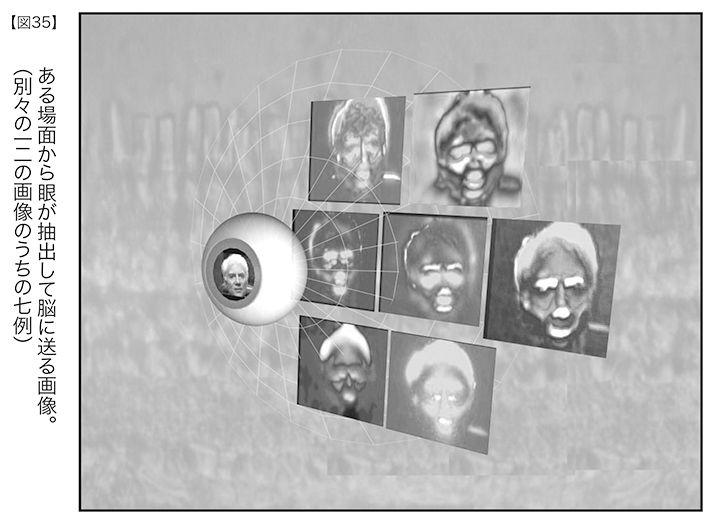
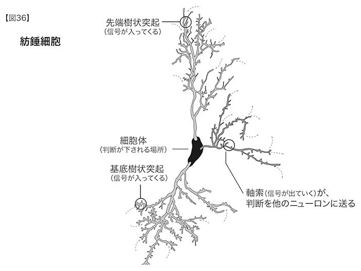

われわれは今や転機にあり今後二〇年間で脳機能の重要な理解が可能になると考えられる確かな根拠がいくつもある。この楽観的な見方は、計測可能ないくつかの動向と、科学の歴史の中で繰り返し証明されてきたある単純な観察結果によっている。すなわち、テクノロジーの進歩によって以前には見ることができなかったものが見えるようになり、科学の進歩が可能になる、という考え方だ。二一世紀への変わり目に、神経科学の知識においても、コンピューティング能力においても、それとわかる転機が訪れた。史上初めて、われわれは、自身の脳について総体的に多くのことを知り、コンピューティング・テクノロジーをこれほどまでに進展させ、ついに、われわれの知能の重要な部分を、検証可能で、リアルタイムかつ高解像度のモデルに変換する作業を本格的に始めることができるようになったのだ。
──ロイド・ワッツ 神経科学者001
今や初めて、脳の働きの全貌を、これほどまで明快に観察できるようになったので、この壮大な力の背後にある包括的なプログラムを、発見できるに違いない。
──Ｊ・Ｇ・テイラー、Ｂ・ホーウィッツ、Ｋ・Ｊ・フリストン 神経科学者002
脳はすばらしい。物質をある形式で配置したものから精神が生みだされ、知的な推論を行い、パターンを認識し、学習を行い、工学的に興味深いさまざまな重要な作業をすることができると、身をもって証明している。よって、脳からアイデアを拝借し、新しいシステムを構築することができるようになる……。脳はお粗末だ。そのシステムは進化の結果生じた乱雑なもので、進化の偶発性によってさまざまな相互作用が起こっているだけである……。それでも脳は丈夫で（生き延びることができるから）、大きな変化や環境からの攻撃にまずまず耐えることができるはずだ。したがって、脳から得られる本当に貴重な洞察とは、上手に自己組織化することのできる、回復力があり複雑なシステムをどのようにして創出するか、ということだろう。ニューロン内の相互作用は複雑だが、高次のレベルに目をやれば、ニューロンは、ネットワークの中でフレキシブルに組み立てられる、いくらか単純な物体のようにも見えてくる。皮質のネットワークは、局部的にはじつに乱雑だが、また高次のレベルに目をやれば、連結の仕方はさほど複雑ではない。進化の過程で、繰り返し利用されるようないくつかのモジュールや反復的な主題が生みだされていて、その実態と相互作用の仕方を理解すれば、同じようなことを自分でもできるかのように思えるのだ。
──アンデルス・サンドベルイ コンピュータ神経科学者、スウェーデン王立技術研究所
人間レベルの知能と、コンピュータがもともと得意な、速度、精度、記憶共有の能力を組み合わせれば、ものすごいことになるだろう。だが、今までのところ、人工知能（ＡＩ）の研究や開発のほとんどには、必ずしも人間の脳の機能をベースとしていない工学手法が用いられている。その理由は単純で、人間の認知能力の詳細なモデルを組み立てるのに必要な、ふさわしいツールを手に入れていないから、というものだ。
脳のリバースエンジニアリングを行う──脳の内部をのぞき込み、モデル化し、各領域をシミュレートする──能力は、指数関数的に伸びている。最終的には、われわれ自身の思考の全域にわたってその根底を支えている作用の原理を理解して、そこで得た知識から、インテリジェント・マシンのソフトウェアを開発するための強力な手順が作られるだろう。生物のニューロン内部で起こっている電気化学的な処理よりもはるかに強力なコンピューティング・テクノロジーにこうした技術を用い、調整し、改良し、能力を拡大していくだろう。この壮大なプロジェクトから得られる大きな利点は、われわれ人間の仕組みを正確に理解することができるようになることだ。さらに、アルツハイマー病や、脳卒中、パーキンソン病、知覚障害などの神経学的な問題に対処する新しい強力な手法を手に入れ、究極的には、われわれの知能を大きく拡大することができるだろう。
新しい脳画像解析とモデル化のツール 脳のリバースエンジニアリングにおける第一のステップは、脳の中をのぞき込み、その働きを知ることだ。これまでそのツールは未熟だったが、数々の新しいスキャン技術が生まれ、空間時間的な解像度や、コストパフォーマンス、帯域幅が大きく改善されて、今や状況は一変した。同時に、脳を構成する各部やシステムについての正確な特性や、その動態についてのデータを急速に蓄積している。対象となるものは、個々のシナプスから、脳のニューロンの半数以上を有する小脳のような大きな領域にまで至る。脳について指数関数的に増えていく知識は、大量のデータベースによって、整然と目録化されている003。
モデル化やシミュレーションを行うことによって、こうした情報を理解し応用できることが、さまざまな研究から急速にわかってきた。このような脳の各領域のシミュレーションの基盤には、複雑性理論とカオスコンピューティングの数学的な原則が用いられ、すでに、実際の人間や動物の脳で行われた実験の結果とひじょうに近い結果が得られている。
第二章で述べたように、脳のリバースエンジニアリングに必要なスキャン装置やコンピューティング・ツールの威力は加速度的に増加している。ちょうど、ヒトゲノム・プロジェクトを実現可能にしたテクノロジーが加速度的に進化したのと同じように。ナノボット時代に到達したら、脳の脳の内側からから、これ以上にないほどの空間時間的な高解像度でのスキャンが可能になる004。人間の知能が働く原理のリバースエンジニアリングを行うとともに、その性能を、より強力なコンピューティングの基板上で模写できる可能性を阻むような障壁は、なんら存在しない。そのような基板は数十年先には実現するはずだ。人間の脳は、複雑なシステムが複雑に階層化されている器官だが、その複雑さのレベルは、われわれの処理可能な範囲内にある。
脳のソフトウェア コンピューティングとコミュニケーションのコストパフォーマンスは、毎年倍増している。先に見たように、人間の知能を模倣するのに必要なコンピューティング能力は、二〇年以内に実現可能となる005。特異点の到来を期待する根底には、非生物的な媒体が人間の思考の豊かさや繊細さ、深さを模倣することができるようになる、というそもそもの仮定がある。しかし、人間ひとりの、さらには、村人全体や国民全体の脳のハードウェアのコンピューティング能力を達成できても、それで自動的に、人間レベルの性能が生まれるわけではない（「人間レベル」というものには、多種多様で繊細な人間の知能のあり方全てが含まれる。人間世界で見られる音楽や芸術への適性や、創造性、身体の動き、さらには感情を理解して適切に反応することなど）。ハードウェアのコンピューティング能力は必須ではあるが、それがあれば十分というわけではない。こうした知性の源となるものの仕組みとコンテンツ──すなわち知能のソフトウェア──を理解することのほうがはるかに重要で、脳のリバースエンジニアリングという大事業の目的であるのだ。
コンピュータが人間レベルの知能にいったん到達すれば、必然的にその地点をはるかに高く超えることになる。非生物的な知能の大きな利点は、機械どうしは知識を簡単に共有することができる、ということだ。もしもあなたがフランス語を習ったり、『戦争と平和』を読んだりしても、学んだ内容をぽんとわたしにダウンロードすることはできない。わたしはそうした学問を、あなたと同じく苦労して身につけなければいけない。あなたの知識に（まだ今のところは）ひょいとアクセスしたり転送させたりすることはかなわないのだ。そうした知識は、神経伝達物質の濃度（シナプス内部の化学物質の濃度のレベル。これにより、あるニューロンが別のニューロンに作用する）が形成する広大なパターンとニューロン間結合（軸索と樹状突起と呼ばれる部分でなされるニューロンどうしの結びつき）の中に、埋め込まれている。
しかし、機械の知能の場合はどうだろう。わたしの会社のひとつでは、研究用のコンピュータに、パターン認識のソフトウェアを用いて、連続した人間の音声を認識させる方法を何年もかけて教えた006。コンピュータに、録音した音声を何千時間も聞かせ、エラーを修正し、「カオス」的な自己組織化アルゴリズム（アルゴリズム自体の規則を修正する手法。半ランダムな初期情報を用い、完全には予測できない結果に至るプロセスに基づく）を教え込むことによってパフォーマンスを忍耐強く改善した。ついにコンピュータは、音声を認識する腕をかなり上げた。今では、自分のパソコンに音声を認識させようとするのなら、これと同じような辛い学習プロセスをパソコンに体験させる（人間の子ども一人ひとりにさせるように）必要はない。すでに確立されたパターンを数秒でダウンロードすればよいだけだ。
脳の分析的なモデル化と機能模倣的なモデル化 人間の知能と現代のＡＩとの間の相違点を示す好例が、チェスの問題をどのように解くか、というその手法に見られる。人間はパターンを認識することで解いていくのにたいして、機械は、指しうる手とそれにたいする手を網羅する巨大な論理的「ツリー」を構築する。これまでにあるテクノロジーのほとんどは（どんな種類のものでも）、後者の「トップダウン」方式の、分析的で工学的なアプローチを用いている。飛行機が、鳥の生理機能や機械的な構造を再現しようとはしていないのが、その一例だ。それでも、自然の手法をリバースエンジニアリングするツールが急速に精巧になるにつれ、テクノロジーは、自然を模倣する方向に向かっていく。ただし、自然の技法を実行するといっても、はるかに性能の高い回路基板を使ってはいるが。
知能のソフトウェアを手中に収めるための、もっとも強力なシナリオは、知能のプロセスについて入手できる最高の例を青写真として直接活用することだ。最高の例とはもちろん、人間の脳だ。「進化」というおおもとの「設計者」はこれを開発するのに数十億年もかかったが、今では即座に手に入る。頭骨で保護されてはいるが、適切な道具が揃えば、もうわれわれの視線を逃れることはできない。脳の中身はまだ著作権で保護されていないし、特許もとられていない（だが、それも変わるだろう。脳のリバースエンジニアリングに基づいた特許申請がすでに出されている007）。さまざまなレベルでの脳スキャンや脳神経モデルから得られた何兆バイトの何千倍もの情報を利用して、機械のためのさらに知能の高い並列アルゴリズムを設計することになる。とりわけ、自己組織化のパラダイムに基づいたアルゴリズムをだ。
この自己組織化の「ボトムアップ」な手法では、ニューロンの結合ひとつひとつを模写しなくてもよい。脳の領域のどこをとっても、反復や冗長性が大量に見られる。脳の各領域を高度にモデル化したものは、しばしば、各ニューロンの構成部分を詳細にモデル化したものよりも単純であることがわかってきている。
脳はどれくらい複雑か？ 人間の脳に収められている情報は一〇億×一〇億ビットの桁数になるが（第三章を参照）、脳の初期設計は、かなりコンパクトなヒトゲノムに基づいている。ゲノムの全体量は八億バイトだが、そのほとんどは反復にすぎず、独自の情報をもっているのは三〇〇〇万から一億バイト（10の９乗ビット以下）だけで（圧縮後）、マイクロソフト・ワードのプログラムよりも少ない008。公正を期すには、リボソームや多数の酵素などといったタンパク質の複製機構全体だけでなく、「エピジェネティック（後成的）」なデータ、すなわち遺伝形質の発現を制御するタンパク質に保存された情報（各細胞内で、どの遺伝子がタンパク質を作るかを判断する情報）を考慮に入れる必要もある。だが、こうした情報が付加されても、この計算値の桁数が大きく変わることはない009。人間の脳の初期状態を特徴づけているのは、遺伝情報とエピジェネティック情報の半分強にすぎないのだ。
もちろん、脳の複雑さは、われわれが世界と関わり合うにつれ増大していく（ゲノムの約一〇億倍010）。しかし、脳のどの特定の領域にも反復性の高いパターンが認められるため、個々の詳細を把握しなくても、関連するアルゴリズムのリバースエンジニアリングをうまく行うことができる。ちなみに、このアルゴリズムは、デジタルとアナログの両方の手法を併用している（ニューロンの発火はデジタルな事象と捉えられ、シナプス内の神経伝達物質のレベルはアナログの値と捉えられる）。たとえば、小脳の基本的な配線パターンは、ゲノムの中で記述されるのは一回だけだが、実際には何十億回も反復されている。脳スキャンとモデル化の研究で得られた情報から、「ニューロモーフィック」〔脳のリバースエンジニアリングに基づいて機能を模倣する手法〕な、脳に相当するシミュレーション・ソフトウェアを設計することができる（すなわち、脳のある領域の包括的なパフォーマンスに機能的に相当するアルゴリズム）。
脳の実用モデルやシミュレーションを構築するペースより、脳スキャンやニューロン構造についての知識の獲得のほうがわずかに先を行っている。世界には五万人以上の神経科学者がいて、三〇〇以上の専門誌に論文を寄稿している011。この分野は幅が広く多様で、科学者や技術者が、新しいスキャン技術や検出技術を開発し、さまざまなレベルでのモデルや理論を打ち立てている。だから、この分野の専門家でも、広範囲にわたる最新の研究全てを完璧に把握していることは少ない。
脳をモデル化する 最新の神経科学では、脳スキャンや、ニューロン間結合モデル、ニューロンモデル、精神物理学的な実験などの多種多様な方法で、モデルやシミュレーションが開発されつつある。先ほども述べたように、聴覚系を研究するロイド・ワッツは、特定のニューロンのタイプやニューロン間結合を伝わる情報を神経生物学の観点から研究し、人間の聴覚処理システムのかなりの部分について総合的なモデルを構築した。ワッツのモデルには、五つの並行した経路があり、神経処理の各段階における聴覚情報が実際に表現されている。そのモデルは、コンピュータ上で、リアルタイムのソフトウェアとして実行され、人間の聴覚の動きと同様に、音やその働きを位置決めし識別することが可能だ。研究はまだ進行中だが、このモデルには、神経生物学的なモデルと脳関連データを使って、実用可能なシミュレーションを構築できる可能性が示されている。
ハンス・モラヴェックらが推測しているように、このような機能的シミュレーションを効果的に行うには、その対象となる領域にある、個々の樹状突起やシナプスやその他の神経系構成要素の非線形性をシミュレートする場合に必要とされるコンピューティング能力の、およそ一〇〇〇分の一以下でことが足りる（第三章で論じたように、脳の機能的なシミュレーションに必要なコンピューティングは毎秒10の16乗回の計算［cps］と推定されるが、神経系構成要素での非線形性をシミュレートするには10の19乗cpsが必要となる012）。
現代の電子工学と、生物のニューロン間結合による電気化学信号との実際の速度比率は、少なくとも一〇〇万対一の開きがある。これと同じ非効率性が、生物のあらゆる側面に認められる。生物の進化では、極端に制限された材料──すなわち細胞──を使って、全てのメカニズムやシステムを構築しているからだ。その細胞自身も、限られた種類のタンパク質でできている。生物のタンパク質は三次元ではあるが、その分子の複雑さは、アミノ酸の線形的な（一次元的な）配列の折りたたみで形成されているにすぎない。
玉ねぎの皮をむく 脳は、単体の情報処理の器官ではなく、むしろ、何百もの専門領域が複雑に絡み合ってできた器官である。「玉ねぎの皮をむく」ことで、いくつもの領域が混ざり合って機能する実態を理解しようとするプロセスは、かなり進んできている。必要とされるニューロンの詳細や脳の相互連結のデータが入手できるようになれば、これから紹介する聴覚野のシミュレーションをはじめとする、細部にわたる具体的な複製が、全ての脳の領域について開発されるだろう（第４章「もうひとつの事例──聴覚領域のワッツのモデル」の節を参照）。
脳のモデル化に使われるアルゴリズムのほとんどは、今日のデジタル・コンピューティングで広く使われているような、逐次的で論理的な手法ではない。脳は、自己組織化をしながら、カオス的でホログラフィー的なプロセスをとる傾向がある（情報が、ひとところにあるのではなく、領域内に分配されている）。そのうえ、超並列的で、デジタル制御されたアナログ技術というハイブリッドな仕組みを利用している。それでも、脳とその組織について急速に蓄えられていく知識から、こうした技術について理解を深め、その技法を引き出していく能力がわれわれにあることが、広範囲にわたるプロジェクトによって証明されてきた。
ある特定の領域のアルゴリズムの理解が完了すれば、それを改良して拡張し、「人工神経系」の中で実行し、神経回路よりもはるかに高速のコンピューティング基板で走らせることができる（現在のコンピュータは、毎秒一〇億回の計算を実行する。これにたいしてニューロン間の処理は、毎秒一〇〇〇回）。そのうえ、すでに理解が進んでいるインテリジェント・マシンを作製する手法としても利用することができる。
この疑問への答えは、「コンピュータ」という言葉でなにを意味しようとしているかで変わってくる。今日のコンピュータのほとんどは、デジタルだけでできていて、一度に一回の（数回かもしれない）逐次コンピューティングを、ひじょうに高速に実行する。これとは対照的に、人間の脳はデジタルとアナログの手法を併用しているが、ほとんどのコンピューティングを、神経伝達物質とそれに関わるメカニズムを用いて、アナログの（連続的な）次元で行っている。ニューロンの計算速度は極端に遅いが（通常、毎秒二〇〇回の処理）、脳全体としては超並列処理を行う。つまり、脳のニューロンのほとんどは同時に働き、最大一〇〇兆回の計算が一斉に処理されるのだ。
人間の脳が行う超並列処理は、わが人類の思考の柱をなすパターン認識能力の鍵となるものだ。哺乳類のニューロンはカオス的なダンスをしているが（すなわち、見たところランダムな相互作用を行う）、ニューラル・ネットワークが十分に学習すれば、ネットワークの判断を反映する一定したパターンが出現する。今の時点では、コンピュータの並列設計にはある程度の限界がある。だが、これらの原則を用いて、生物のニューラル・ネットワークを非生物的に同等な機能で再現したものが構築できない、という理由はどこにもない。実際にも、世界中で多数の研究がなされていて、すでに成功を収めている。わたしもパターン認識を専門としていて、およそ四〇年の間に関わった数々のプロジェクトでも、訓練が可能で非決定論的なコンピューティングの形式を用いていた。
脳に特有の組織化という方法も、十分な能力をもつ従来のコンピュータで有効にシミュレートすることができる。自然の意志が有する設計パラダイムを複製することは、将来のコンピューティングにおける主要な流れとなるはずだ。また、デジタルのコンピューティングはアナログのコンピューティングに機能的に同等だということを、念頭に置いておかねばならない。つまり、デジタルとアナログが混じり合ったネットワークの機能の全てを、デジタルだけのコンピュータで実行することができるのだ。この逆は真ではない。デジタルコンピュータの機能の全てをアナログコンピュータでシミュレートすることはできない。
それでも、アナログのコンピューティングには工学的な利点がある。潜在的には、デジタルよりも何千倍も効率が高いのだ。アナログのコンピューティングは、数個のトランジスタで実行できる。あるいは、哺乳類のニューロンの場合なら、特定の電気化学的プロセスで行われる。これにたいしてデジタルでは、数千もしくは数万個のトランジスタが必要だ。それでいて、アナログがもつこの利点も、デジタルコンピュータではシミュレーションのプログラミング（その修正も）が容易であることで相殺されうる。
この他にも、脳が従来のコンピュータと異なる重要な点がたくさんある。
・脳の回路はとても遅い。シナプスがリセットされニューロンが安定するまでにかかる時間（ニューロンが発火してからニューロンとシナプスがリセットされるのに要する時間）はとても長く、パターン認識の判断を下すにあたって利用できるニューロンの発火サイクルの数はきわめて少ない。機能的磁気共鳴画像装置（ｆＭＲＩ）と脳磁気図検査装置（ＭＥＧ）で撮ったスキャンを見ると、あいまいさを解決することが必要とされない判断は、一回のニューロン発火サイクル（二〇ミリ秒以下）で、基本的に反復の（繰り返しの）プロセスなしに行われることがわかる。対象の認識にかかるのはおよそ一五〇ミリ秒だ。したがって、たとえ「何度も何度も考え」ても、実行されるサイクルの数は、せいぜい数百か数千くらいで、普通のコンピュータのように数十億というわけではない。
・それでも脳は超並列処理ができる。脳には、ニューロン間接続が一〇〇兆の桁数で存在し、そのひとつひとつが、情報を同時に処理できる。この二つの要因（長いサイクルタイムと超並列処理）が合わさって、前にも説明したように、脳はある程度のレベルのコンピューティング能力をもつようになっている。
今日では、最大のスーパーコンピュータがこの領域に達しつつある。最先端のスーパーコンピュータ（もっとも普及している検索エンジンに使われているものもそのひとつ）は10の14乗cpsを超えている。この値は、第三章で、脳の機能的なシミュレーションの見積もりで出した低いほうの値と一致する。ただし、必要とされる全体的なコンピューティング速度と記憶容量を達成し、脳の超並列処理アーキテクチャをシミュレートするのであれば、脳そのものとまったく同じ細密な並列処理を使う必要はない。
・脳はアナログとデジタルの現象を併用する。脳の中での結合の位置関係は、基本的にはデジタルだ。すなわち、結合があるか、ないかのいずれかである。軸索〔出力系〕からの発火は完全なデジタルではないが、デジタルのプロセスにかなり近い。脳のほとんどの機能はアナログで、非線形性にあふれている（出力が、段階的になめらかに変化するのではなく、とつぜん切り替わる）。その仕組みは、これまでにニューロンの典型的なモデルとして用いていたものよりも、はるかに複雑だ。それでも、ニューロンと全ての構成物（樹状突起、棘突起〔樹状突起にあるさらに細かい多数の突起〕、イオンチャネル〔細胞膜などにあって、イオンの出入経路となる。シナプスでの情報伝達にも重要な役割を果たす〕、軸索）がもつ、細部に及ぶ非線形的な力の働きは、非線形システムの数学を使ってモデル化することができる。これらの数学的モデルは、デジタルコンピュータで、いかなる精度であれシミュレートすることができる。先に述べたように、神経の領域を、デジタル・コンピューティングではなく、トランジスタをもともとのアナログ仕様で用いてシミュレートしてみれば、カーヴァー・ミードが実証したように、能力は、三桁から四桁も向上するだろう013。
・脳は自身で配線し直す。樹状突起はつねに新しいスパインを作ろうとし、そこにはシナプスが新たに形成されていく。樹状突起とシナプスの位置関係や伝導性も、つねに適応し変化している。神経系は、その組織のどのレベルにおいても、自己組織化を行っている。ニューラル・ネットやマルコフモデルなどの、コンピュータによるパターン認識システムで使われる数学の技法は、脳で使われるものよりもはるかに単純だが、実際には、自己組織化のモデルについての工学的実践は十分に行われている014。現在のコンピュータは、文字通り自分自身を配線し直したりはしないが（「自己回復システム」が登場し、そうなりつつあるが）、ソフトウェアでなら、このプロセスを効果的にシミュレートすることができる015。将来は、ハードウェアでもそうできるようになる。ただし、自己組織化のほとんどは、ソフトウェアで実行するほうが利点があるのかもしれない。プログラマーの自由度が高くなるからだ。
・脳の細部のほとんどはランダムだ。脳のどの側面においても、確率論的なプロセス（入念にコントロールされた制約の中でのランダム性）が大量にあるが、樹状突起一本一本の表面にある「えくぼ」のひとつひとつまでモデル化する必要はない。コンピュータの作動原理を理解するために、トランジスタ一個一個の表面の細かな違い全てをモデル化する必要がないのと同じことだ。ただし、いくつかの細部は、脳の働きの原理の解読に不可欠であるため、重要なものと、確率論的な「ノイズ」やカオスからなるものとを見分けることが必須となる。ニューロンの機能にあるカオス的（ランダムで予測不可能）側面は、複雑性理論やカオス理論の数学的技法を用いてモデル化することができる016。
・脳は創発的な特性を用いる。知的な振る舞いは、脳のカオス的で複雑な活動から生まれる創発的〔異質な複数要素間の相互作用が、個別要素からは予測できない新しいものを生み出すこと〕な特性である。シロアリやアリのコロニーに見られる知的な設計について考えてみよう。内部を連結するトンネルや換気システムが、いかに精巧に設計されていることか。巧みで複雑な設計がなされてはいても、アリやシロアリの塚には、優れた建築家がいるわけではない。この構造物は、コロニーの構成員全員が、比較的単純な規則にのっとって予測不可能な相互作用を行うことから、創発されたものなのだ。
・脳は不完全である。みずからの判断で創発させた知能は最適には一歩及ばない、というのが、複合適応システムの特徴だ（すなわち、要素を最適に配列した場合よりも低いレベルの知能になる）。だが、ある程度優れていれば、問題はない。わが人類の場合で言えば、生態学的なニッチの中で競争相手を出し抜くことができるくらいの知能のレベルに達していればよい（たとえば、霊長類も、認知機能をもち親指が他の指に向き合っているが、脳は人間の脳ほど発達しておらず、手もそれほど器用ではない）。
・われわれは、矛盾している。アイデアや取り組み方が、対立するものも含めて多様にあることが、よりよい結果につながる。われわれの脳は、矛盾した考えをもつことに長けている。実際、こうした多様性を内に抱えているからこそ、われわれは繁栄している。人間社会、とりわけ複数の意見から解決を導く建設的な方法がとられている民主主義社会にひき比べてみればわかることだ。
・脳は進化を利用する。脳が用いる基本的な学習パラダイムは、進化〔自然淘汰〕的なものだ。もっともうまく世界を把握できて、認識や判断の役に立つようなニューロンの結合パターンが、生き残る。新生児の脳では、ランダムに形成されたニューロン間結合がほとんどを占めるが、二歳児の脳では、それらのごく一部分しか生き残っていない017。
・パターンが大切だ。これらのカオス的な自己組織化の手法に見られるいくつかの細部は、モデル拘束条件（初期条件と、自己組織化の手段を決定するルール）と呼ばれ、ひじょうに重要である。ただし、拘束条件の中の多くの細部は、当初はランダムに設定されている。システムはやがて自己組織化を行い、システムにそれまでに提示された情報から一定の特徴を徐々に表すようになる。最終的な情報は、特定のノードや結合に認められるのではなく、分配されたパターンの中に見られる。
・脳はホログラフィー的だ。ホログラムの中に配分された情報と、脳のネットワークの中に情報が表現される手法との間には、類似性がある。さらに、ニューラル・ネットやマルコフモデル、遺伝的アルゴリズムなどのコンピュータ化されたパターン認識で用いられる自己組織化の手法にも、同じようなことが認められる018。
・脳は深く絡み合っている。脳に回復力があるのは、脳が深く絡み合ったネットワークであり、その中で情報がある地点から別の地点へと幾通りもの方法で進むことができるからだ。脳とインターネットとの類似性を考えてみよう。インターネットは、それを構成するノードの数が増大するにつれ、ますます安定してきた。ノードやインターネットのハブが、いくつか丸ごと作動しなくなっても、ネットワーク全体が停止することはない。これと同じように、ニューロンは次々と失われているが、脳全体の完全性に影響することはない。
・脳には、各領域をまとめるアーキテクチャがある。ひとつの領域内の結合の細部は、当初はランダムで、拘束条件があり自己組織化を行うものだが、それぞれに特定の機能を担う数百の領域をまとめるアーキテクチャがあり、領域間を特定のパターンで結合している。
・脳の領域の設計は、ニューロンの設計よりも単純だ。モデルは、高次のレベルに行くにつれ、複雑になるのではなく、単純になる。コンピュータの例を考えてみよう。トランジスタをモデル化するには、半導体の詳細な物理特性を理解することが必須だ。それに、ひとつのトランジスタを支えている方程式は、とても複雑だ。ところが、二つの数を掛け合わせるだけのデジタル回路は、数百個のトランジスタが載っているにもかかわらず、数個の公式だけで、もっと簡単にモデル化できる。数十億個のトランジスタを搭載したコンピュータ丸ごと一台でも、命令セットとレジスタ記述部を用いてモデル化することができ、ほんの数ページのテキストと数学の変換式だけで記述できる。
オペレーティング・システム（ＯＳ）や、言語コンパイラ、言語アセンブラのためのソフトウェア・プログラムは、それ相応に複雑だが、ある特定のプログラム──たとえば、マルコフモデルに基づいた言語認識プログラム──のモデル化は、方程式を数ページ並べるだけで記述できるだろう。このような記述のどこにも、半導体の物理的特性についての詳細は書かれていない。これと同じことが、脳についても言える。ある一定した視覚的特徴（顔など）を検出したり、聴覚情報において帯域フィルター（入力を、ある特定の周波数帯域内に制限する）を実行したり、二つの事象の時間的な近さを評価したりするような特定のニューロンの配置は、神経伝達物質の制御に関わる実際の物理的、化学的な関係や、それぞれのプロセスに関わるシナプスや樹状突起の変数よりも、はるかに単純に記述することができる。さらに高次のレベル（脳のモデル化）に進む前に、こういった神経の複雑性を入念に検討する必要はあるが、脳の作動原理がいったん理解されれば、その多くは簡素化できる。
器具の誤差とノイズをかなり減らすことができ、分子の直径よりも短い距離から、分子のごく小さな動きまで見ることが可能になった。……この種の実験は、一五年前にはただの夢物語だった。
──スティーヴン・ブロック スタンフォード大学生物科学および応用物理学教授
コンピュータのことをなにも知らないのに、これのリバースエンジニアリングを遂行しようとしているとしてみよう（「ブラックボックス」的アプローチ）。まず、装置のまわりに磁気センサーを並べて取りつける。データベースを更新する作業の間、ある特定の回路基板で重要な活動がなされているのに気づくだろう。こうした作業の間、ハードディスクが作動していることにも気づくかもしれない（実際、ハードディスクの立てる音に耳を傾けるのは、コンピュータがなにをしているかを知るための原始的な方法のひとつだった）。
そこで、ハードディスクは、データベースを保存している長期記憶に関係していて、この作業中作動している回路基板は、データの変換と保存に関わっているのだという説を立てることになる。これで、作業がいつどこでなされているのかをだいたい把握できるが、タスクがいかに完遂されるかについては、あまりよくわからない。
コンピュータのレジスタ（一時記憶の場所）が前面パネルの光と結びついていたなら（初期のコンピュータはそうだった）、一定のパターンの光がちかちかするのが見えるだろう。この光のパターンは、コンピュータがデータを分析している間はレジスタの状態が急速に変化していることを示し、コンピュータが内部でデータを伝送している間は、レジスタの状態の変化が比較的ゆっくりしていることを示す。そこで、これらの光は、ある種の分析作業の間の論理状態の変化を表している、と説明するだろう。こうした理解は間違ってこそいないが不十分なもので、コンピュータの動作理論を引き出したり、情報が実際にはどのように符号化され変換されているのかを言い当てたりすることはできないだろう。
ここまで述べてきた仮定の話は、これまでずっと未熟なツールしかない中で、人間の脳をスキャンしてモデル化しようと努力してきた過程に似ている。現代の脳スキャン研究に基づくモデルのほとんどは（ｆＭＲＩやＭＥＧ、次にあげるような手法を使ったもの）、基本的なメカニズムを浮かび上がらせるものにすぎない。これらの研究に価値はあるが、空間時間的解像度はまだ粗く、脳の目立った特性のリバースエンジニアリングを実現するには至っていない。
脳をスキャンする新ツール ここで、次のように想定してみよう。先ほどのコンピュータの例で、実際に、回路の特定の地点に正確にセンサーを置くことができ、これらのセンサーが非常に高速に特定の信号を追跡することができるとする。すると、変換されている実際の情報をリアルタイムに追うために必要なツールが手に入り、回路が現実にどのように働いているのかをくわしく解説することができるようになる。じつのところこれは、コンピュータ基板などの回路の仕組みを理解してデバッグするために（たとえば、競合他社の製品をリバースエンジニアリングする目的で）、電子エンジニアが、コンピュータの信号を視覚化するロジックアナライザを用いてやっていることとまったく同じなのだ。
神経科学においては、この種の分析ができるほどのセンサー技術はまだ開発されていないが、状況は変わりつつある。脳をのぞき込むためのツールは、指数関数的なペースで改良されつつある。非侵襲性の〔針や管などを体内に挿入しない〕脳スキャン装置の空間解像度は、一二か月ごとに二倍になっている019（単位体積あたり。図29を参照）。

脳スキャン画像の再構成にかかる時間も、同じように改善されている（図30）。

もっとも広く使われている脳スキャン装置はｆＭＲＩ（機能的磁気共鳴画像装置）〔どの部位が活性化しているかを捉えるＭＲＩ〕だ。空間解像度は一から三ミリメートルと比較的高いが（個々のニューロンの画像を撮影できるほどは高くない）、時間解像度〔活動状態の変化を捉える最小の時間間隔〕は数秒と低い。ｆＭＲＩの最近の世代では、時間解像度が約一秒、あるいは、脳を薄くスライスしたものなら一〇分の一秒となっている。
もうひとつよく使われる技術がＭＥＧ（脳磁気図）で、こちらは、皮質の錐体ニューロンから主に発生する弱い磁場を頭蓋の外から計測するものだ。ＭＥＧは、時間解像度は優れている（一ミリ秒）が、空間解像度は約一センチとかなり大まかだ。
レッドウッド神経科学研究所の主任研究者フリッツ・ゾンマーは、ｆＭＲＩとＭＥＧを統合して、空間時間的な計測精度を改善する手法を開発している。他の新しい成果からは、ｆＭＲＩの技術で、幅が一ミリの数分の一しかない、柱状構造と層構造と呼ばれる領域をマッピングでき、数十ミリ秒の間に起こる働きを検知できることが実証された020。
ｆＭＲＩも、陽電子放射断層撮影（ＰＥＴ）と呼ばれる陽電子を使ったスキャン技術のいずれも、間接的な手法でニューロンの活動状態を計測する。ＰＥＴは局所脳血流（ｒＣＢＦ）を測り、ｆＭＲＩは血中酸素濃度を測る021。血流量がニューロンの活動に関係するかどうかは議論の余地があるが、血流量は、ニューロンのスパイクではなく、局所的なシナプスの活動を反映している、という点は合意されている。ニューロンの活動と血流に関係があると初めて主張されたのは、一九世紀の終わりだった022。ｆＭＲＩにしても、血中酸素濃度とシナプスの活動の関係が直接的ではない、という限界がある。さまざまな代謝のメカニズムが、この二つの現象の間の関係に影響しているからだ。
それでも、ＰＥＴとｆＭＲＩはどちらも、脳の状態の相対的な変化を計測するにはひじょうに信頼性が高い、と考えられている。この二つは主として「引き算的パラダイム」の手法を用い、特定の作業中にひじょうに活発になる脳の領域を示すことができる023。この手法では、被験者が活動を行っていないときにスキャンして得られたデータを、被験者が特定の精神的活動を行っているときにスキャンして得られたデータから引き算する。両者の違いが、脳の状態の変化を表す。
侵襲性の技術で、空間解像度、時間解像度ともに高いものに「光学的画像」がある。頭蓋の一部を外し、生きている脳組織を、ニューロンが活動すると蛍光を発する染料で染め、デジタルカメラで発光を映し出す。光学的画像では手術が必要なため、マウスなどの動物実験に主に使われている。
この他、さまざまな領域での脳の機能性を特定するための方法に、経頭蓋磁気刺激（ＴＭＳ）というものがある。頭蓋の外の正確に測った位置に磁気コイルを設定し、強いパルスの磁場を与える。脳の小さな領域を刺激するか（一時的な）「仮の損傷」を誘発するかすると、能力が減退したり強化されたりする024。ＴＭＳは、特定の課題を行う際のさまざまな脳の領域の関係（活動）を調べたり、さらには、神秘体験のような感覚を引き起こしたりするのに使われもする025。脳科学者のアラン・スナイダーは、ＴＭＳを体験した被験者の四〇パーセントが、新たな優れた能力を示した、と報告した。その多くは、絵画の才能など、とてもすばらしい能力だった026。
脳を破壊してスキャンすることが許されるのなら、空間解像度を大幅に改善することができる。凍結した脳をスキャンすることはすでに可能だが、全ての脳内配線を完全にマッピングするには、速度や帯域幅がまだ足りない。だがまたしても、収穫加速の法則に従い、この可能性も、脳スキャンの他のあらゆる側面と同様に、指数関数的に増大してきている。
カーネギーメロン大学のアンドレアス・ノワツィクは、マウスの脳と体の神経系を、二〇〇ナノメートル以下の解像度でスキャンしている。これは、完全なリバースエンジニアリングに必要な解像度に近い。他にも「脳組織スキャナー」と呼ばれる破壊的スキャン装置が、テキサスＡ＆Ｍ大学のブレイン・ネットワーク研究所で開発されており、マウスの脳のスライスを用い、脳全体を一か月かけて二五〇ナノメートルの解像度でスキャンすることができる027。
解像度を高める 現時点で開発されている多くの新しい脳スキャン・テクノロジーは、時間的、空間的いずれの解像度も著しく改善されている。感知スキャンシステムの新たな世代には、細部をこれまでになく精密なレベルで捉えてモデル化するのに十分なツールが備わっている。以下に、そうした新たに誕生しつつある画像感知システムの例を少しあげよう。
とりわけ期待がもてる新しいスキャンカメラが、レイフ・Ｈ・フィンケル率いるペンシルヴァニア大学神経工学調査研究所で開発されている028。この光学システムでは、空間解像度は個々のニューロンの映像を写すほど十分に高く、時間解像度は一ミリ秒で、個々のニューロンの発火を記録するのに十分になると予測されている。
当初のバージョンでは、カメラから最大一〇ミクロンの深さまで、同時に約一〇〇個の細胞をスキャンできる。将来のバージョンでは、カメラから最大一五〇ミクロンの深さまで、同時に最大一〇〇〇個の細胞を写し、時間解像度は一ミリ秒以下になるだろう。このシステムでは、動物が頭を使った作業をしている間、生体内の（つまり、生きている脳内の）ニューロン組織をスキャンすることができる。ただし、脳の表面をむき出しにしないといけない。神経組織を染色し、電圧によって蛍光を放つようにし、高解像度カメラでそれを捉える。このスキャンシステムは、動物が特定の知覚技能を習得する前とあととに脳を検査するのに用いられるようになるだろう。ＭＥＧに相当する高速の（一ミリ秒）時間解像度をもち、それと同時に、個々のニューロンや接続を写し出すことができる。
時間的にも空間的にも精密なやり方で、ニューロンや、さらにはニューロンの特定の部分を非侵襲的に活性化させる手法も開発されつつある。そのひとつに光子を利用し、直接的な「二光子」励起法を用いる「二光子レーザースキャン顕微鏡」（ＴＰＬＳＭ）と呼ばれるものがある029。この顕微鏡は、三次元空間にひとつの焦点を作り、ひじょうに高解像度のスキャンを可能にする。持続時間がわずか一秒の一〇億分の一の一〇〇万分の一（10の-15乗秒）というレーザーパルスを利用して、シナプスの受容体が活性化されるのに伴い細胞内に蓄積されたカルシウムを計測することで、脳に損傷を与えずにひとつのシナプスの活性化を検知する030。この手法では組織がほんの少量だけ破壊されてしまうが、個々の樹状突起のスパインや、活動中のシナプスの映像が超高解像度で得られる。
この技術は、すでに、超精密な細胞内手術に利用されている。ハーヴァード大学の物理学者エリック・メイジャーらは、この手法を用いて細胞の精密な修飾が実行できることを立証した。ニューロン間結合を切断したり、一個のミトコンドリア（細胞のエネルギー源）だけを破壊したりといったことを、他の細胞構成要素に影響を与えずにできるのだ。「太陽ほどの熱が発生するが、ほんの10の18乗分の一秒ほどのこと、それもとても狭い領域に限られている」と、メイジャーの同僚、ドナルド・イングバーは語る。
さらに、「多電極記録」と呼ばれる技法では、電極を配列して、多数のニューロンの活動を、ひじょうに高い時間解像度（一ミリ秒以下）で同時に記録する031。また、第二高調波発生（ＳＨＧ）〔入射光の二倍の周波数の高周波を発生する〕顕微鏡と呼ばれる非侵襲性の技術では、「活動中の細胞を研究」することができると、この技術の開発リーダーであるコーネル大学の大学院生、ダニエル・ドムベックは説明する。さらに、光コヒーレンス映像法（ＯＣＩ）という技術もあり、コヒーレント光（同じ位相にそろった光波）を用い、細胞集団のホログラフィー的な三次元映像を作りだす。
ナノボットを使ってスキャンする 頭蓋の外から脳をスキャンするような、ほぼ非侵襲性と言える技術が急速に向上しつつあっても、ニューロンの目立った特徴全てを捉えるのにいちばん有効なやり方は、内側からスキャンすることだ。二〇二〇年代までには、ナノボット・テクノロジーが実現され、それが応用される顕著な分野のひとつが、脳のスキャンになるだろう。前にも説明したように、ナノボットは、人間の血球ほどの大きさか（七から八ミクロン）、それよりも小さいロボットだ032。数十億個のナノボットが脳のあらゆる毛細血管を駆けめぐり、有意義なニューロンの特徴ひとつひとつを、ごく近くからスキャンすることができる。高速の無線通信を利用して、ナノボットは互いに通信し、さらには、脳スキャンデータベースを集積しているコンピュータとも通信する（言ってみれば、ナノボットたちとコンピュータは、無線ＬＡＮでつながっている033）。
ナノボットを生物の脳の構造に結びつけるにあたって大きな技術的課題となるのが、血液・脳関門（ＢＢＢ）だ。一九世紀の終わりごろ、動物の血流に青い染料を注入すると、全ての器官が青に染まるが、脊髄と脳だけはそうならないことを科学者が発見した。血液中の、有害な影響を及ぼす可能性のあるさまざまな種類の物質──たとえば、細菌や、ホルモン、神経伝達物質として作用する可能性のある化学物質、その他の毒素──から脳を守るための防壁があるのだろう、とする適切な仮説が立てられた。酸素と、ブドウ糖、その他のごく限られた種類の小さな分子だけが、血管から脳に入ることができる。
二〇世紀初めに行われた死体解剖で、脳や他の神経系組織の毛細血管の内側は、他の器官にある同等の大きさの血管よりも、内皮細胞がよりぎっしりと詰まっていることが明らかになった。もっと新しい研究では、ＢＢＢは、脳への立ち入り許可を与える鍵とパスワードをもつ関門という特徴を備えた複雑なシステムであることがわかった。具体的には、脳の受容体と反応して、ごく限られた地点でＢＢＢを一時的に開放する二つのタンパク質、ゾヌリンとゾットが見つかったのである。この二つのタンパク質は、小腸においても、同じように受容体を開放してブドウ糖などの栄養分の消化を許可する働きをする。
脳をスキャンしたり脳と相互作用したりするナノボットの設計には、ＢＢＢを考慮に入れる必要がある。次に、将来的可能性を見込めば実行可能に思われる戦略を、いくつかあげてみる。もちろん、これ以外の対策も、これからの四半世紀のうちには出てくるに違いない。
・当然考えられる方策は、ＢＢＢをすっと通り抜けられるくらいにナノボットを小さくすること。しかし、このアプローチは、少なくとも今日考えられているナノテクノロジーからすれば、もっとも現実的ではない。こうするには、ナノボットの直径は二〇ナノメートル以下でないといけない。これは、炭素原子一〇〇個分くらいの大きさだ。ナノボットの大きさをこれほどまでに小さくすると、機能が大幅に制限される。
・中間的な戦略として、ナノボットを血流の内にとどめ、ロボット・アームを出してＢＢＢを突き破り、神経細胞の外壁を覆っている細胞外液に到達する、という方法が考えられる。こうすれば、ナノボットは、コンピューティングとナビゲーションの材料を備えるのに十分な大きさを保てる。ほとんど全てのニューロンは、毛細血管から細胞二個か三個分の距離しか離れていないため、アームは、約五〇ミクロンのところに届けばいい。ロバート・フレイタスらの分析によれば、こうした操縦装置の幅を二〇ナノメートル以下に抑えることは、十分に実現可能だ。
・また、ナノボットを毛細血管から出さずに、非侵襲性のスキャンを行う、というアプローチもある。たとえば、フィンケルらが設計したスキャンシステムは、ひじょうに高解像度で（個々のニューロン間結合が見えるほど）一五〇ミクロンの深さまでスキャンできる。これは、必要な条件の数倍も高い。こうした種類の光学画像システムは、もちろん、大幅に小型化される必要があるが（今の設計と比べて）、サイズの削減をしやすい電荷結合素子（ＣＣＤ）センサーが用いられている。
・非侵襲性スキャンの別の種類のものとして、二光子スキャナーのような集束信号を出す一組のナノボットと、その信号を受け止めるもう一組のナノボットを使うものがある。受け取った信号のインパクトを分析することで、間に存在する組織の形状が決定される。
・ロバート・フレイタスは、別のタイプの対策を提唱している。ナノボットが文字通り脳に侵入するというものだ。ＢＢＢに穴をこじ開け、血管から出たあと、その損傷を修復する。ナノボットは、ダイヤモンド状の結晶構造をもつ炭素で作られるので、生体組織よりもはるかに強い。フレイタスはこう書く。「細胞が豊富にある組織で細胞と細胞の間を通り抜けるには、ナノボットが、進路上にある最小限の細胞間接着点を壊す必要がある。その後、他の有害物質の侵入を最小限にとどめるために、ナノボットは、壊した細胞間接着点を、通り抜けた時点でふたたび封じなければならない。だいたいのところ、モグラの穴掘りみたいなものだ034」
・さらに他の取り組み方が、最新の癌研究から示されている。癌の研究者らは、ＢＢＢを部分的に混乱させて、癌破壊物質を腫瘍まで運ぶ、という可能性におおいに注目している。最近の研究から、ＢＢＢは、さまざまな要因に反応して関門を開くことがわかった。先に述べたようにある種のタンパク質がその要因に含まれる他、局所的に血圧が高かったり、ある種の物質の濃度が高かったり、マイクロ波などの放射があったり、感染や炎症が起きたり、ということも含まれる。ブドウ糖などの必要とされる物質を運び込むという特殊なプロセスもあり、さらには、糖アルコールのマンニトールが、密に詰まった内皮細胞を収縮させ、一時的にＢＢＢに裂け目を作ることがわかった。これらのメカニズムを利用して、いくつかの研究グループが、ＢＢＢを開く化合物を開発している035。こうした研究は癌治療を目的としたものだが、同じような手法を利用して、関門を開いてナノボットを送り込み、脳をスキャンしたり、知的な機能を強化したりすることもできるだろう。
・血流やＢＢＢをそっくり迂回して、神経組織に直接つながる脳の領域に、ナノボットを注入することができるだろう。後に述べるが、新しいニューロンは、脳室から脳の別の部位へと移動する。ナノボットも、同じ移動経路をたどることができるだろう。
・ロバート・フレイタスが、ナノボットが脳神経系の感覚信号を監視するためのいくつかの技術を記している036。これは、脳への入力信号のリバースエンジニアリングと、神経系の内部から完全没入型のヴァーチャル・リアリティを生みだすことのいずれにとっても、重要なものになる。
▼フレイタスは、聴覚信号をスキャンし監視する方策をこう提言している。「モバイルのナノデバイスが……耳のらせん動脈まで泳ぎ、枝分かれする中を下って蝸牛小管に至り、らせん神経繊維と、らせん神経節内のコルチ器官［蝸牛または聴神経］の上皮に入る神経の近くで、神経モニターとして配置される。これらのモニターは、人間の耳が感知した全ての聴覚的な神経データの流れを検出、記録し、あるいは、通信ネットワークにある他のナノデバイスに再配信することができる」
▼体が感じる「重力や回転や加速の感覚」を捉えるには、「半規管……に位置する有毛細胞から発生する求心性神経の先端にナノボットを配置する」とフレイタスは想定する。
▼「運動感覚を統御するには……四肢の動きや位置か、特定の筋肉の活動を追跡し、さらには制御するように、運動ニューロンを監視することができる」
▼「嗅覚や味覚の感覚神経の神経データの流れを、ナノ感覚装置が立ち聞きすることもできるだろう」
▼「痛みの信号を記録して、必要に応じて修正することもできるだろう。皮膚から受け取る機械的な神経インパルスと温度による神経インパルスがそうできるように」
▼網膜には小さな血管がたくさんあり、「光受容体（桿体、錐体、双極細胞、神経節細胞）と、それを統合するもの、すなわちニューロンとの双方に、容易に近づくことができる」とフレイタスは指摘している。視神経からの信号は毎秒一億のレベルを超えているが、この程度の信号処理はすでに可能だ。ＭＩＴのトマソ・ポッジョらが指摘しているが、視神経信号の符号化についての理解はまだ進んでいない。視神経の中にある一本一本の繊維が発する信号を監視できるようになれば、視神経信号を解釈する能力はおおいに高まるだろう。この分野は、現在、盛んに研究されている。
これから説明するように、身体各部位から発せられた未加工の信号は、何段階もの処理を経て、大脳皮質の奥深くに位置する、左島、右島と呼ばれる二つの小さな器官の中に、コンパクトで動的な形で集約される。完全没入型のヴァーチャル・リアリティを実現するには、体中にある未処理の信号よりも、二つの島にある解釈済みの信号を取り入れるほうがより効果的だろう。
脳の働きの原理をリバースエンジニアリングする目的で脳をスキャンするほうが、ある人格を「アップロード」する目的でスキャンするよりも簡単だ。脳のリバースエンジニアリングという目的であれば、領域内での接続をスキャンするだけで、十分に基本的なパターンを理解できる。ニューロンの結合ひとつひとつを捉える必要はない。
各領域内での神経の配線パターンを理解できたら、そこで得た知識と、その領域の中でそれぞれのタイプのニューロンがどのように作用しているかというくわしい理解とを結びつけることができる。脳の中の特定領域には何十億ものニューロンがあるかもしれないが、ニューロンのタイプはというと、限られた種類しかないだろう。すでに、二光子スキャンなどの方法を駆使して生体外や生体内で細胞を調べることにより、いくつかの特定の種類のニューロンやシナプス結合において働くメカニズムを推論する、という点で大きな進展が成しとげられた。
ここであげたシナリオは、今日すでに、まだその初期の段階にあるとはいえ現実性を内包している。スキャナーがニューロンの構造に物理的に接近できれば、脳の特定領域内のニューロン間結合ひとつひとつの正確な形まで見える、非常に高解像のスキャン映像を作りだせる──そうした技術はすでにある。ナノボットの分野では、診断や治療を目的として血球サイズの装置を開発するための主要な学会がすでに四つもできている037。第二章で論じたように、コンピューティングのコストは指数関数的に減少すると予測されるし、電子技術と機械技術の両方では急速に小型化が進み効率が上がると見込まれる。こうした見通しに基づけば、先にあげたようなシナリオを、ナノボット・テクノロジーが、控えめに見ても二〇二〇年代には実行できると期待できる。ナノボットベースのスキャンが現実化すれば、回路設計者が今いる立場と同じところにようやく到達できる。高感度で非常に高解像のセンサー（ナノボットの形態をとったもの）を脳内の数百万、いや数十億の位置に配置し、生きた脳が活動する様子を、息をのむほど詳細に目にすることができるのだ。
われわれがまるで魔法をかけられたように小さく縮められて、なにかを考えている人の脳の中に入れられたとすると、たくさんのポンプやピストンや歯車やてこがせわしなく動いている様が見えるだろう。そして、これらの働きを力学的用語で完璧に描写し、その結果、脳の思考プロセスを完璧に記述することができることになるだろう。ところがその記述のどこにも、思考について触れた箇所はないのだ！ あるのは、ポンプとピストンとてこの話だけである。
──Ｇ・Ｗ・ライプニッツ（一六四六－｜一七一六年）
いったい……場は、どのようにして、その原理を表現するのだろう。物理学者は、陽子や電子、クォーク、量子波動関数、相対性、エネルギー保存などの用語を使う。天文学者は、惑星、恒星、銀河、ハッブル効果、ブラックホールなどの用語を使う。熱力学者は、エントロピー、第一法則、第二法則、カルノーサイクルなどの用語を使う。生物学者は、系統発生、個体発生、ＤＮＡ、酵素などの用語を使う。これらの用語は、なんとそれぞれひとつの物語を表す題名なのだ！ 場の原理は、実際には、場をなすさまざまな要素の構造と振る舞いについての複数の物語が織り交ざったものなのだ。
──ピーター・Ｊ・デニング アメリカ計算機学会の元会長、「コンピューティングの大原則」より
肝要なのは、正しいレベルで脳のモデルを構築することだ。このことはもちろん、全ての科学的なモデルについて言える。化学は、理論的には物理学に基づいていて物理学から全てを導き出すことができるが、実際にそうすることは、あまりに厄介で実行不可能だ。それで化学は、化学の法則やモデルを用いる。同じように、理論的には、熱力学の法則を量子物理学から演繹することができるが、直接的なやり方だとはとうてい言えない。素粒子の数が十分にあって、素粒子の集まりというよりも気体と呼ぶにふさわしい場合、個々の素粒子の相互作用を表す方程式を解くのは非現実的で、熱力学の法則が非常によく当てはまる。気体内の個々の分子の相互作用は気が遠くなるほど複雑で予測不可能だが、何兆個もの分子からなっている気体そのものは、予測可能な特性をいくつももっている。
同様に、生物学も、化学に根ざしてはいるが、独自のモデルを使う。高次に移る前に低次について十分に理解しておく必要はあるが、高次の結果を、低次のシステムがもつ複雑な力学を用いて表現するのはだいたいにおいて不必要なことだ。たとえば、ＤＮＡ分子中の原子の相互作用はもちろんのこと、ＤＮＡの生化学的メカニズムを全て理解していなくても、動物の胎児のＤＮＡを操作することで、その動物がもつ特定の遺伝特性を理解することができるのである。
低次のほうが複雑なことが多い。たとえば膵島細胞は、その生化学的なもろもろの機能（主に人間の細胞で見られ、全ての生物細胞で見られるものもある）からすると、とてつもなく複雑だ。ところが、細胞が数百万個集まってできている膵臓が、インシュリンや消化酵素のレベルを制御している作用をモデル化するのは、簡単ではないが、一個の膵島細胞の詳細なモデルを作るよりは、かなり容易だ。
同じことが、脳のモデル化や理解のレベル──シナプスの反応の物理的理解から、ニューロンの集合による情報の変換に至るまで──についても言える。これまでに精密なモデルを開発するのに成功した脳の各領域には、膵島細胞にあるのと同じような現象が認められる。モデルは複雑ではあるが、細胞単体や、さらにはシナプス単体を数学的に描写したものよりは単純だ。前にも論じたように、こうした領域を対象としたモデルに必要とされるコンピューティングの量は、全てのシナプスや細胞をモデル化するのに理論的に示唆されるコンピューティング量よりも、はるかに少ない。
カリフォルニア工科大学のジル・ローランはこう言う。「たいていの場合、システムの集団的な振る舞いを、その構成要素についての知識から推論するのはとても困難です。……神経科学は……一次的で局所的な説明の解釈図式が必要とはされるが、それだけでは十分ではないようなシステムを対象とする科学なのです」脳のリバースエンジニアリングは、トップダウンとボトムアップそれぞれのレベルでの記述とモデルを改良し、双方のモデルとシミュレーションの改良を重ねることで前進していくものだ。
ごく最近まで、検知ツールやスキャン装置が未熟だったために、神経科学は、あまりにも単純化されたモデルで記述されていた。そのため、われわれの思考プロセスは、われわれ自身を理解することが本質的に可能なのかどうか、と疑いをもつ者がたくさんいた。ピーター・Ｄ・クレイマーは「精神が、われわれに理解できるほど単純だとすれば、われわれはあまりにも単純すぎて、精神を理解することはかなわないことになる」と書いている038。先に、ダクラス・ホフスタッターが、人間の脳とキリンの脳とを比べて考え込んだという話を紹介した。キリンの脳の構造は、人間の脳の構造とそうは違わないのに、キリンには、自身の思考方式を理解する能力が明らかに欠けている。しかし、シナプスのような神経系の構成要素から、小脳のような大きな神経の領域に至るまで、さまざまなレベルでの詳細なモデルの開発に成功した最近の事例から、われわれの脳の正確な数学的モデルを構築して、コンピューティングを用いてモデルをシミュレートすることは、難しくはあるが、データの能力が高まりさえすれば実行可能な作業であることがわかっている。神経科学において、モデルは古くから作られてきたが、それが十分に包括的で精密になり、モデルに基づいたシミュレーションが、実際の脳の実験と同じように動作するようになったのは、ごく最近のことである。
神経系構成要素のモデル──シナプスとスパイン
米国心理学会の二〇〇二年総会の講演で、ニューヨーク大学の心理学者で神経科学者のジョセフ・ルドゥーはこう語った。
われわれがもし、記憶によって形づくられているとしたら、そして、記憶の機能が脳で司られているのなら、シナプスこそが、自己の根本をなす単位だということになる。シナプスを通じてニューロンが通信をし、シナプスの物理的な構造の中で記憶が符号化されるのだから。シナプスは、脳という組織の階層の中ではかなり低い位置にあるが、とても重要なものだとわたしは考える。……自己は、脳を構成する個々の下部組織と、下部組織間の複雑な相互作用を合わせた総計であり、その下部組織それぞれは独自の形態の「記憶」をもっている。シナプスの可塑性──すなわち、ニューロン間での信号のやりとりの強度を変えられる能力──がなければ、学習に必要とされる、こうしたシステム内での変化は、ありえないだろう039。
初期のモデル化では、ニューロンが情報変換の主要な単位であるとされていたが、流れが変わり、ニューロン内の構成要素が注目されるようになった。たとえば、コンピュータ神経科学者のアンソニー・Ｊ・ベルはこのように論じている。
分子的および生物物理学的プロセスが、入力されるスパイクにたいするニューロンの感度（シナプス効率およびシナプス後側ニューロンの応答性）と、ニューロンがスパイクを産出する興奮度と、ニューロンが産出しうるスパイクのパターンと、新しいシナプスが形成される（動的な再配線）可能性を制御している。これは、神経系サブシステムでもっとも顕著な（影響）要素のうちの四つをあげたにすぎない。さらに、局所電磁場などのニューロンを超えた広がりをもつ効果や、膜をとおして一酸化窒素が拡散することなどに反応して、コヒーレントなニューロンの発火や、細胞へのエネルギー放出（血流）などの影響が出ているように見受けられる。特に後者は、ニューロンの活動と直接的に相関している。こうした例はいくらでもあげられる。神経調節物質や、イオンチャネルや、シナプスのメカニズムを本格的に研究し、なおかつ正直な人であれば誰でも、ニューロンが、たとえ有用なひとつの記述階層を形成しているとしても、他から独立したコンピューティングの階層だと見なすことはできないはずだ040。
確かに、実際の脳のシナプスは、古典的なマカロック－｜ピッツのニューラルネット・モデルで記述されたものより、はるかに複雑だ。シナプスの反応は、さまざまなイオンのポテンシャル（電圧）で制御された複数のチャネルや、複数の神経伝達物質や神経調節物質などの、多様な要因によって影響を受ける。それでも、過去二〇年の間、ニューロンや樹状突起、シナプスの振る舞い、さらにスパイク列（活性化されたニューロンが発するパルス）に表れる情報に隠された数学的な公式が確立されるなど、かなりの進歩をとげてきた。ピーター・ダヤンとラリー・アボットは、最近の論文の中で何千もの実験的研究から導かれた広範な知識を理論づける、既存の非線形微分方程式を要約した041。ニューロンの細胞体やシナプス、網膜や視神経やその他多数の種類のニューロンに見られるようなフィードフォワード型〔ここでは、前のシステムの出力が次のシステムの入力になる前向きのプロセスのこと〕のネットワークの作用における生物物理学を表す、十分に実証されたモデルがいくつも存在する。
シナプスがどう働くかに注目した研究は、ヘッブの先駆的な業績に端を発している。ヘッブは、短期記憶（作業記憶ともいう）はどのように機能するのか、という疑問を提起した。短期記憶に関連する脳の領域は前頭葉前部（前頭前野）であるが、現在では、綿密に調べられた他の神経回路のほとんどでも、情報がさまざまな形態で短期間保持される様子がわかっている。
ヘッブの研究の大部分は、シナプスが受け取った信号を強めたり抑制したりする際の状態の変化と、ニューロンがループ状に発火を続けるということで論議を呼んだ反響回路とに重点が置かれている042。ヘッブが提示したもうひとつの理論に、ニューロン自体の状態が変化する、すなわち、細胞体が記憶機能をもつというものがある。これらのモデル全ての可能性は、実験的な証拠によって支えられている。古典的なヘッブのシナプス記憶や反響記憶では、記録された情報が利用可能になるまでの間に時間のずれが発生する。生体内の実験では、少なくとも脳のいくつかの領域では、あまりにも素早いニューロンの反応が見られ、このような標準的な学習モデルでは説明がつかないために、学習によって細胞体の変化が促されたと捉えるしかないものもある043。
もうひとつ、ヘッブが直接予測したわけではないが、ニューロンの接続自体がリアルタイムで変化する、という可能性がある。最近のスキャン画像から、樹状突起のスパインと新しいシナプスが素早く成長することがわかった。これは、重要なメカニズムと見なされるべきだ。さらに実験からは、単純なヘッブのモデルを超える、シナプスのレベルにおける学習の振る舞いが、豊富に見つかっている。シナプスはその状態を急速に変えることができるが、刺激が続くことによって、あるいは刺激がないことによって、または他のさまざまな変動によっても、シナプスは徐々に衰え始める044。
ヘッブが考案した単純なシナプスのモデルよりも現在のモデルははるかに複雑だが、ヘッブの直観はおおむね正しかったことが証明されている。ヘッブのシナプス可塑性モデルの他にも、現在のモデルには、調節機能を与えるような包括的なプロセスが含まれている。たとえば、シナプスのスケーリング〔シナプスの入力信号と出力信号との間の重みづけを変更すること〕によって、シナプス電位がゼロになる（そのため、乗法的な手法によって増加することができなくなる）のを防いだり、逆に過度に電位が高くなりネットワークを支配してしまうのを防いだりしている。生体外の実験では、新皮質や海馬や脊髄のニューロンを培養して形成したネットワークにおいて、シナプスのスケーリングが認められた045。他のメカニズムも、全体的なスパイクのタイミングや、多数のシナプスに電位が配分されることに感応する。最近になって発見された、こうした学習やネットワークの安定性を改善するメカニズムのもつ能力は、シミュレーションによって実証されている。
シナプスの理解においてもっとも刺激的な新しい展開は、シナプスの位置関係とシナプス間の結合が継続的に変化していることがわかったというものだ。革新的なスキャンシステムによって、シナプスの結合が急速に変化していくことが初めて観察された。このシステムでは、ニューロンに手を加えて緑の蛍光を発するように遺伝子操作された動物を使う。生きているニューロン組織の画像を撮影でき、しかも解像度が十分に高いので、樹状突起（ニューロン間結合）だけでなくスパインまでも捉えることができる。スパインとは、樹状突起から突き出た突起物で、新たなシナプスの発生のもととなるものだ。
ロングアイランドにあるコールドスプリングハーバー研究所の神経生物学者、カレル・スヴォボダらは、このスキャンシステムでマウスを観察し、ヒゲから得た情報を分析するニューロンのネットワークを調べ、ニューロン学習についてのすばらしい理解をもたらした。樹状突起からは、つねに新しいスパインが発生している。そのほとんどは一日か二日しかもたないが、ときには、スパインが定着し安定することもある。「高い回転率が見られるが、これは、ニューロンの可塑性において重要な役割を果たしていると思われます。芽を出したスパインは、近くのニューロンを物色してシナプスになろうとしているパートナーがいないかどうかを探るのです」とスヴォボダは言う。「もしも見つかった結合相手が好ましいものなら、つまり、望ましい種類の脳の再配線を反映するものなら、こうしたシナプスは安定化して、さらに長く存続します。しかし、このタイプのシナプスのほとんどはうまくは成長せず、収縮していきます046」
この他に、一貫性のある現象が観察されている。ある特定の刺激が繰り返されると、ニューロンの反応が時間とともに減少する、というものだ。こうした適応があるために、新しい刺激のパターンがなによりも優先される。ニューヨーク大学医学部の神経生物学者、ウェン・ビヤオ・ガンも同様の研究を行っている。ガンは、成体マウスの視覚皮質のスパインを観察し、スパインのメカニズムに長期記憶が保持されうることを示した。「たとえば、一〇歳の子どもが、ある情報を保存するのに一〇〇〇個のニューロン間結合を使っているとします。その子が八〇歳になったとき、いかなる変化が起きていても、結合の四分の一はまだ存在しています。こういうわけで、子どものころの体験をずっと覚えていられるのです」。ガンはさらに説明を続ける。「学習して記憶するにあたって、新しいシナプスをたくさん作って古いシナプスを捨てる必要は実際にはないだろう、というのがわれわれの考えでした。短期の学習や記憶のためには、すでに存在するシナプスの強度を修正するだけでいいと。ところが、長期記憶を達成するために、少数の新しいシナプスが作られたり、取り除かれたりすることもあるようなのです047」
接続の四分の三がなくなっても記憶が損なわれない理由は、符号化という方法が、ホログラムの方法と似た性質をもつからのようだ。ホログラムでは、情報は、広範囲に拡散されたパターンの中に保存されている。ホログラムの四分の三を破壊しても、解像度は四分の一にはなるが、全体のイメージは損なわれない。レッドウッド神経科学研究所の神経科学者、ペンッティ・カネルヴァによる研究からは、記憶はニューロンの集合全体を通じて広範囲に動的に分配されている、という考えが導き出されている。これでなぜ、古い記憶が「色あせ」（記憶の解像度が減少するから）ながらも持続するのかがわかる。
ニューロンのモデル
特定のニューロンが特殊な認識作業を行っていることも、研究によって明らかにされている。ニワトリを使った実験から、音が左右の耳に届く時間のずれを検出するニューロンが脳幹にあることがわかった048。異なるニューロンは、異なる長さの時間的ずれにそれぞれ特異的に反応する。これらのニューロン（およびニューロンが組み込まれているネットワーク）が働く様子には複雑な不規則性が多々見られるが、実際になにを実行しているかは、容易に描写でき、単純に模写できる。カリフォルニア大学サンディエゴ校の神経科学者、スコット・マケイグは、「最近の神経生物学の研究結果から、学習と記憶において、正確に同期されたニューロンの入力が重要な役割を果たしていることがわかってきた」と言う049。
電子ニューロン カリフォルニア大学サンディエゴ校の非線形科学研究所での最近の実験において、電子ニューロンが生物のニューロンを正確に模倣する可能性のあることが実証された。ニューロン（生物、非生物のいずれのものでも）は、いわゆるカオスコンピューティングの最良の事例だ。個々のニューロンは、基本的に予測不可能な方式で動く。ニューロンのネットワーク全体が入力を受け取ると（外界から、もしくは他のニューロンネットワークから）、ニューロン間の信号のやりとりは、最初は、乱れ狂ったランダムなものに見える。時間が経過すると、通常は一秒の何分の一かの間に、ニューロンのカオス的な相互作用が静まり、発火の安定したパターンが現れてくる。このパターンが、ニューラル・ネットワークの「結論」だ。ニューラル・ネットワークがパターン認識の作業を行っているとしたら（こうした作業は、人間の脳の活動の多くを占めている）、出現したパターンが適切な認識を表すことになる。
そこで、サンディエゴ校の研究者たちはこういう疑問をもった。電子ニューロンは、生物のニューロンと一緒になって、このカオスのダンスを踊ることができるだろうか？ 彼らは、人工ニューロンと、イセエビからとった本物のニューロンとをひとつのネットワークに接続した。すると、生物－｜非生物の混合ネットワークは、同じように作動して（すなわち、カオス的な相互作用が起こり、その後、安定したパターンが現れる）、生物のニューロンだけでできたネットワークが出す結果と同じ種類の結果が得られた。つまりは、生物のニューロンが、電子のニューロンを受け入れたのだ。これによって、ニューロンのカオス的な数学モデルが、確かに正しいものであったことがわかった。
脳の可塑性
一八六一年、フランスの神経外科医、ポール・ブローカが、脳のある領域が損傷を負ったり外科手術の影響を受けたりすると、細かい運動能力や言語能力などが失われてしまうことを発見した。その後一〇〇年以上も、脳のさまざまな領域は、特定の作業と結びついていると考えられてきた。脳の領域のいくつかは、確かに、特定の種類の技能のために当てられる傾向があるが、今では、そうした割り当ても、脳卒中などの脳の損傷に応じて変化しうることがわかっている。一九六五年の名高い研究で、Ｄ・Ｈ・ヒューベルとＴ・Ｎ・ヴィーゼルが、脳卒中などにより神経系が損傷を負った後に、脳の広範囲にわたって再組織化が起こることがある、と発表した050。
さらに、ある領域内における結合やシナプスの詳細な配列は、その領域がどれほど多くの機能に使われているかで、直接的に決まってくるものだ。脳スキャンが、樹状突起スパインの成長や、新シナプスの形成を検知できるほどの高解像度を達成したことから、われわれの脳が、文字どおりわれわれの思考を後追いするべく、成長し、適応していく様を目にすることができる。これにより、デカルトの格言「われ思う、ゆえにわれあり」の意味に新たなニュアンスが加わった。
カリフォルニア大学サンフランシスコ校のマイケル・マーゼニックらがある実験を行った。サルが、一本の指を器用に動かさないととれないような場所に餌を置く。実験前とあとの脳スキャンから、その指の操作を司る脳の領域にあるニューロン間結合とシナプスに、劇的な成長がはっきりと見られた。
アラバマ大学のエドワード・タウブは、手の指からの触覚入力の評価を司る皮質の領域を研究した。楽器の演奏経験のない人と、弦楽器の演奏家とを比較すると、右手の指の操作を司る脳の領域に差異は見られなかったが、左手の指の領域については大きな差が見られた。触感の分析に使われる脳組織の量に比例した大きさで両手の絵を描いたなら、音楽家の左手の指（弦を押さえるほう）はばかでかくなる。弦楽器の練習を子どものころから始めた人のほうが違いは大きかったが、「四〇歳でバイオリンを始めたとしても、脳の再組織化は起こる」とタウブは述べている051。
同様の現象が、ラトガーズ大学のポーラ・タラルとスティーヴ・ミラーが開発した、失読症（読書障害）の生徒を支援するソフトウェア・プログラム、Fast ForWord の評価において見出された。文章を子どもに向けて読み上げるこのプログラムでは、ｂやｐのようなスタッカートの音素では速度を落とす。そうした音素が速く話されると、失読症の生徒の多くは聞き取れないという観察結果があるからだ。このように修正した読み方をすると、障害のある生徒たちが読む練習をする手助けになることがわかった。スタンフォード大学のジョン・ガブリエリは、ｆＭＲＩスキャンを用いて、失読症のためのプログラムを使っている生徒の脳で、言語処理に関連する左前頭葉前部が実際に拡大し、その部位の活動が活発になったことを認めた。「人間は、受け取る入力をもとにして、脳を作り上げていくのです」と、タラルは言う。

脳が自身を配線し直すきっかけを与えるには、思考を体の動作で表現する必要さえない。ハーヴァード大学のアルヴァロ・パスクァル－｜レオネ博士は、ボランティアの人々に簡単なピアノの練習をしてもらい、練習の前とあとの脳をスキャンした。ボランティアたちの脳の運動皮質は、練習の影響を直接受けて変化した。博士はその後、二番目のグループに、ピアノの練習をしていると考えるだけで、体の筋肉はどこも実際には動かさないよう指示した。これでも、運動皮質のネットワークには、同じくらい顕著な変化が現れた052。
視覚と空間の関係を調査した最近のｆＭＲＩの研究において、ニューロン間結合は、一回の学習を行うだけで急速に変化することができるとわかった。いわゆる「背側」経路（視覚刺激の位置情報や空間特性の情報を処理する）にある後部頭頂皮質の細胞と、「腹側」経路（さまざまな抽象化のレベルから一定の特徴を認識する）にある後部下側頭皮質の細胞との間の結合に変化が認められた053。変化の度合いは、学習の度合いに直接的に比例していたのだ054。
カリフォルニア大学サンディエゴ校の研究者らが、短期記憶と長期記憶の形成の違いについて重要な考察を発表した。高解像のスキャン法を用い、長期記憶の形成に関連する脳の領域である海馬のシナプス内での化学的変化を観察することに成功したのだ055。細胞が最初に刺激されると、神経化学物質のアクチンが、そのシナプスが結合されているニューロンのほうへと移動したことが認められた。これにより、近隣の細胞のアクチンも刺激を受け、活性化された細胞から遠のいた。ただし、こうした変化はほんの数分しか続かなかった。刺激が十分長く繰り返されれば、より強く持続的な変化が起きただろう。
「短期記憶による変化は、神経細胞が会話をするごく普通のやり方のひとつだ」と、論文の筆頭執筆者、マイケル・Ａ・コリコスは言う。
ニューロンの長期にわたる変化は、一時間の学習コースの中でニューロンが四回刺激されて初めて起こる。シナプスが実際に枝分かれし、新しいシナプスが形成され、永続的な変化が起こり、おそらくは、生涯それが続くことになる。人間の記憶になぞらえるとこうだ。なにかを一度目にしたり聞いたりすると、そのことは頭の中に数分は残るだろう。重要なことでなければ、だんだんぼやけていき、一〇分後には忘れている。しかし、もういちどそれを見たり聞いたりして、一時間の間にそれが何度も起こったら、もっと長い期間にわたってそのことを覚えていることになる。何度も繰り返されたことがらは、生涯にわたって忘れないこともある。ひとつの樹状突起に二つの結合が新たに作られたら、その結合はとても安定していて、失われてしまうおそれはまったくない。こういうものが、一生涯にわたって続くと期待できる種類の変化だ。
「ちょうどピアノの練習に似ていて、ある曲を何度も弾けば、記憶に刻み込まれます」と、共同執筆者で生物学教授の合田裕紀子は言う。同様に、「サイエンス」誌の論文で、神経科学者のＳ・ローウェルとＷ・シンガーが、視覚皮質の中で新たなニューロン間結合が急速かつ活発に形成されたことを示す証拠を発見した、と報告している。この現象を、ドナルド・ヘッブの文句を借りて「一緒に発火するものは、互いに結合している」と二人は表現している056。
記憶の形成についてのもうひとつの洞察が、「セル」誌に掲載された研究論文の中で報告されている。記憶を記録するシナプスの中で、ＣＰＥＢタンパク質が実際にその形を変えるのを発見したのだ。驚いたことに、ＣＰＥＢは、プリオン様の状態にあるときに、この記憶機能を行っている057。
「記憶がどのように働くかについては以前からよくわかっていましたが、鍵となる記憶保存装置がなにか、ということははっきりとわかっていませんでした」と、共同執筆者で、ホワイトヘッド生物医学研究所の所長、スーザン・リンドクィストは言う。「この研究から、記憶装置がおそらくなんであるかがわかりました。──でも、プリオン様タンパク質の活動が関わっているかもしれないとは、あまりにも意外でした。つまり、プリオンは、ただの自然界の変わり者ではなく、基本的なプロセスに参加しているかもしれない、ということなのですから……」本書第三章で述べたように、プリオンが、電子的記憶を構築する際の強力な手段になることも、技術者によって発見されている。
そのうえ、脳スキャンによる研究から、不必要で好ましくない記憶が抑制されるメカニズムが明らかにされている058。きっとジクムント・フロイトも喜ぶことだろう。スタンフォード大学の科学者らは、ｆＭＲＩを用いた実験の被験者に、先に記憶した情報を忘れるよう指示した。忘れようと試みている間、前頭皮質にある記憶の抑圧に関わる領域が、高いレベルの活動を示した。一方、通常は記憶に関わる海馬の活動は、比較的少なかった。こうした発見から「忘れるという積極的なプロセスが存在することが確認され、動機性忘却についての研究を進めるための神経生物学的なモデルが構築される」と、スタンフォード大学の心理学教授ジョン・ガブリエリらは記している。ガブリエリはさらにこう述べる。「重要なのは、人間の脳がいかにして好ましくない記憶を遮断するかが示され、実際にこうしたメカニズムがあり、それが生物学的な基盤に基づいていることが明らかになった点だ。これで、記憶を抑圧するようなものは脳の中にはない、記憶の抑圧などというものは誤解された作り話にすぎない、とは言えなくなる」
ニューロンとニューロンの間に新たな結合を発生させるだけでなく、脳は、神経幹細胞から新たなニューロンも作りだす。神経幹細胞は複製することで、自身の貯蔵庫を一杯にしておくのだ。複写の過程で、神経幹細胞のうちのいくつかは「神経前駆」細胞になり、それが次には、ニューロンや、星状細胞と乏突起神経膠細胞という名の二種類の支持細胞になる。別の「神経前駆」細胞は、さらに、特殊な種類のニューロンに発達する。ただし、神経幹細胞が脳室内のもといた場所から移動しないと、この分化は起こらない。無事に移動を終えることができるのは、神経細胞のうちおよそ半分しかない。これは、胎児や幼児の脳で、初期に発達したニューロンのごく一部分しか生き残ることができない、というプロセスに似ている。科学者は、目的とする領域に神経幹細胞を直接注入して、この神経の移動プロセスを迂回しようとする他、こうした神経発生（新しいニューロンを生みだす）のプロセスを促進する薬を開発し、けがや病気で損なわれた脳を修復したいとも考えている059。
ソーク生物学研究所の遺伝学者、フレッド・ゲージ、Ｇ・ケンパーマン、ヘンリエット・ファン・プラーグは、神経発生は実際、経験に刺激されて起こるものだと示した。マウスを、中身のないつまらないかごから出して、刺激の多いかごに移すと、海馬の領域で分裂する細胞の数がおよそ二倍になったというのだ060。
脳の各領域をモデル化する
おおかたのところ、人間の脳は、比較的小さい分散型システムが多数集まってできていて、発生学に従った複雑な社会となり、あとから追加された直列型の記号システムで部分的に（ほんの一部分だけ）制御されている、と言ってよいだろう。しかし、下位の記号システムが底のほうで仕事のほとんどを請け負っているというまさにその性質ゆえに、脳の他の部分が、みずからの働きについて十分に知ることが妨げられている。これこそが、人々がこれほどたくさんのことを行っているのに、それらが実際にどのようになされているのかを完全に把握できていないことの説明になるだろう。
──マーヴィン・ミンスキーとシーモア・パパート061〔数学者、コンピュータ科学者〕
常識は、単純なものではない。それどころか、苦労の末に手に入れた実際的なアイデアが集まった巨大な社会なのだ。人生において学ぶ無数の規則と例外、人の気質や性向、精算と小切手にまつわる雑事などなど。
──マーヴィン・ミンスキー
脳のそれぞれの領域の組織が可塑性をもっているという新たな洞察を得たうえに、科学者たちは、脳の特定領域の詳細なモデルを次々に作りつつある。これらのニューロモーフィックなモデルとシミュレーションは、ベースとなった情報をほぼ有効に利用している。ニューロンの研究から得られた詳細なデータと、脳をスキャンして得られたニューロン間の結合データを、効果的なモデルと実用的なシミュレーションに素早く転換することによって、われわれには自身の脳を理解する能力が本質的に欠けているとする、よくある懐疑論の誤りが明らかにされた。
非線形性やシナプスのひとつひとつを基本にして、人間の脳の機能をモデル化することは、だいたいにおいて不必要だ。個々のニューロンやその結合に記憶や技能を保持する領域（たとえば小脳）をシミュレートするには、精密な細胞モデルが確かに有用になる。だが、そうした領域を対象とする場合でも、ニューロンの全ての構成部分をシミュレートするよりも、はるかに少ないコンピューティング量でシミュレートできる。これは、次に説明する小脳のシミュレーションについても当てはまる。
個々のニューロンの下位レベルの部分は、とてつもなく複雑かつ非線形的で、脳の内部の何兆個もの結合の下にはカオス的で半ランダムな配線が隠れているが、過去二〇年の間に、こうした適応型非線形システムの数学的なモデル化が大きく前進してきた。全ての樹状突起の形と、全てのニューロン間結合の寸分たがわぬ「ねじれ」までを保存することは、たいていは不要だ。適切な分析レベルでの動態を調べるだけで、脳の広範囲な領域の作用原理は理解できる。
われわれはすでに、広い範囲の脳の領域をモデル化し、シミュレートすることにおおいに成功している。これらのシミュレーション・テストでは、本物の人間の脳を対象とした精神物理学的な実験で得られたデータと比較しても、すばらしい結果が得られている。これまでのスキャン装置や検知ツールが比較的未熟だったことを考えても、モデル化に成功したことは、以下にあげる進行中の研究からもわかるように、収集した大量のデータから正しい洞察を引き出すのが可能であることの証しとなっている。
次に、脳の特定領域のモデル化の成功事例を少しだけあげる。全て進行中の研究ばかりだ。
ニューロモーフィックなモデル──小脳
わたしは『スピリチュアル・マシーン』の中でこのような問題を検討した。一〇歳の子どもは、どのようにしてフライのボールを捕るのだろうか？062 その子の目に映るのは、外野の守備位置から見えるボールの軌跡だけだ。三次元空間でボールが描いている経路を実際に割り出すには、難しい連立微分方程式を解く必要がある。ボールがこの先たどるコースを予測するには、それ以上の方程式を解く必要があり、それらの結果をもとにして外野手がどのような動作をすべきかを求めるには、さらなる方程式を解かなければならない。幼き外野手は、コンピュータもなく、微分方程式を習ったこともなしに、どうしたらこれらの作業を数秒以内にやってのけられるのだろう。もちろん方程式を意識的に解くわけではないにしても、いったいぜんたい脳は、どのようにこの問題を解くのだろう。
『スピリチュアル・マシーン』が出版されてから、このような技能育成の基本的なプロセスにたいする理解は、かなり進んできた。わたしが想定したように、この問題は、頭の中に三次元運動のモデルを構築することで解かれるのではない。そうではなく、ボールの観察された動きを、外野手の適切な動きへと直接変換し、両腕と両脚の動きを変えることで、問題が氷解するのだ。ロチェスター大学のアレクサンドル・プージェと、ワシントン大学のローレンス・Ｈ・スナイダーは、視野で知覚された運動を、筋肉の必要とされる運動に直接的に変換する仕組みを表現できる数学的「基底関数」を書き上げた063。さらに、最近開発された小脳の機能モデルを分析したところ、われわれの小脳の神経回路は、必要とされる基底関数を学習し、それを適用して、こうした感覚－｜運動の変換を実行していることが実証された。フライのボールを捕るなどの、感覚－｜運動の作業を行えるようになるために試行錯誤のプロセスを繰り返しているときには、小脳のシナプスのシナプス電位を“〝訓練”〟して、適切な基底関数を学習させているのだ。小脳は、基底関数を使って二種類の変換を行っている。望ましい結果から行動を導くものと（「逆内部モデル」と呼ばれる）、可能ないくつかの行動から予期される結果を導くものだ（「順内部モデル」）。基底関数のアイデアを用いれば、運動制御にとどまらない脳内の学習プロセスを記述できるかもしれない、とトマソ・ポッジョは指摘している064。
灰色と白が混じり合い、野球のボールほどの大きさで、豆のような形をした、小脳と呼ばれる脳の領域は、脳幹の上に位置し、脳全体のニューロン数の半分以上を有している。小脳は、多岐にわたる重要な機能をもっている。たとえば、感覚－｜運動の協調や、身体の平衡、運動作業の制御、行動の結果の予想（自分自身の行動はもちろん、他の物体や人の行動についても）などがそうだ065。機能や作用は多様なのに、シナプスや細胞組織はひじょうに均質で、ニューロンの種類は数個しかない。どうやら小脳は、特殊な種類のコンピューティングを実行しているようである066。
小脳が行う情報処理は均一的なものではあるが、大脳皮質から（脳幹の中心核から小脳の苔状繊維細胞を経由して）、あるいは他の領域から（とりわけ脳の「下オリーブ」〔延髄にあるオリーブという部位の下側〕領域から、小脳の登上繊維細胞を経由して）受け取るさまざまな入力を見てみれば、広範囲にわたるその機能を理解することができる。小脳は、身体の運動を制御する他にも、感覚入力のタイミングや配列を把握する仕事も受けもっている。
小脳はまた、脳がいかにしてコンパクトなゲノム情報から、それをはるかにしのぐ情報容量を発達させたのかを示す一例でもある。脳についてのゲノムのほとんどは、各種の神経細胞（ニューロンの樹状突起、スパイン、シナプスなども含む）の構造をくわしく記述し、そうした構造が刺激や変化にどう対応するかを定めている。実際の「配線」を指示しているゲノムのコードは、わりあいに少ない。小脳では、基本的な配線方法（図32）が、何十億回も繰り返されている。明らかに、ゲノムは、こうした小脳の構造の反復ひとつひとつについての具体的な情報を提示したりはせず、構造がどう反復されるかについていくつかの制約を定めているだけである（ちょうど、ゲノムが、他の器官においても細胞が正確にどう配置されるのかを定めてはいないのと同じように）。

小脳からの出力のいくつかは、約二〇万個のα動ニューロンに届き、そこで、身体にある約六〇〇個の筋肉に出す最終的な信号が決定される。α運動ニューロンに入力される信号は、これらの筋肉ひとつひとつの運動を直接的に規定するわけではなく、かなり圧縮された、あまりよくわかっていないやり方で符号化されている。筋肉への最終信号は、神経系の下位のレベル、具体的には脳幹と脊髄で決定される067。おもしろいことに、こうした組織化の極端な事例がタコに見られる。タコの中枢神経系は非常に高度なレベルの命令を足の一本一本に与えているようだが（「あの物体をつかんで、近くに引き寄せろ」など）、その指令を実行するのは、それぞれの足にある独立した末梢神経系にまかせている068。
小脳の三種類の主な神経（神経繊維）の役割について、近年、多くのことがわかってきた。「登上繊維」と呼ばれるニューロンは、小脳を訓練する信号を出しているようだ。小脳が出す出力のほとんどは、大きなプルキンエ細胞（一八三七年にこの細胞を特定した人物、ヨハネス・プルキンエに由来する名称）が発している。それぞれのプルキンエ細胞は、約二〇万の入力（シナプス）を受け取る。普通のニューロンなら、受け取る入力は平均して約一〇〇〇個だ。入力はだいたい、顆粒細胞からやってくる。これはもっとも小さいニューロンで、一平方ミリメートルに、約六〇〇万個詰まっている。子どもが文字を手で書くのを習うときの小脳の役割を研究したところ、プルキンエ細胞が、一連の手の動作から実際にサンプルを抽出していることがわかった。細胞のそれぞれが、ある特定のサンプルの動きに敏感な反応を示すのだ069。明らかに小脳は、つねに大脳の視覚皮質からの知覚的な誘導を必要とするらしい。さらに、文字を書くにあたり、曲率と速度との間に反比例の関係が認められる──つまり、ある文字を書く際に、ていねいな曲線を書くよりも直線で書いてしまうほうが速く書ける──が、このことは小脳の細胞の構造と関連があることがわかった。
詳細な細胞研究や動物実験から、小脳のシナプスの生理や組織を表すすばらしい数学的な記述が得られた070。さらに、入力と出力における情報の符号化や、実行される変換についての記述も得られている071。複数の研究から得たデータを集めて、テキサス大学医学部のハビエル・Ｆ・メディナとマイケル・Ｄ・モークらが、小脳の精密なボトムアップのシミュレーションを作り上げた。そこでは、一万個以上のニューロンと三〇万個以上のシナプスがシミュレートされ、小脳の細胞の主な種類は全て網羅されている072（図33）。細胞とシナプスの結合はコンピュータが決定する。コンピュータは、制約と規則に従って、シミュレートされた小脳の領域を「配線」する。これはちょうど、遺伝コードをもとに実際の人間の脳の配線を行う際に用いられる確率論的（制限の中でのランダムな）手法に似ている073。テキサス大学の小脳シミュレーションを拡大して、シナプスと細胞の数をさらに多くすることは、難しくはない。

テキサス大学の研究者らは、シミュレーションを使って古典的な学習実験を行い、その結果を、実際に人間にたいして行った同様の条件づけ実験の多数の結果と比べた。人を対象とした実験では、聴覚音と、まぶたに空気を吹きつけてまぶたを閉じさせることとが関係づけられた。空気を吹きつけることと音を出すことを一〇〇回から二〇〇回同時に行うと、被験者は関係性を学び、音を聞いただけで目を閉じる。それから、空気を吹きつけることはせずに音だけを何度も出すと、被験者はそのうちに二つの刺激を分離することを学ぶ（反応を「消去」する）。よって、この学習は二方向性である。さまざまなパラメーターを調節すると、シミュレーションは、人間や動物の小脳の条件づけ実験の結果に適度に一致した。興味深いことに、シミュレーションにおいて小脳に損傷を作ると（シミュレートされた小脳ネットワークから一部を取り去る）、実際に小脳に損傷を受けたウサギの実験から得られた結果と同様になった074。
脳の中で大きな領域を占める小脳には統一性があり、ニューロン間の配線が比較的単純であることから、小脳の入力－｜出力の変換は、脳の他の領域のものに比べて比較的よく理解されている。関係する方程式をまだ改良する余地はあるが、このボトムアップのシミュレーションはかなりすばらしいものであることが証明された。
もうひとつの事例──聴覚領域のワッツのモデル
脳に似た知能を創出する方法としては、実行されているコンピューティングひとつひとつのエッセンスを表現できるほど詳細に至るまで正確な、リアルタイムな実用モデルシステムを構築し、本物の（生物の）システムを計測したものと照らし合わせてモデルが正しく作動しているかどうかを検証する、というものが考えられる。このモデルはリアルタイムで動かなければならない。そうすることによって、普通なら入力されないような、現実世界の不都合や複雑なことがらに対処しなければならなくなるからだ。モデルは、本物のシステムと比較しうるほど十分な解像度で作動しなければならない。そうすれば、各段階で、どんな情報が表現されているのかを正しく見抜くことができるようになる。ミードにならい075、モデルの開発は、本物のシステムのうちよく理解が進んでいる境界域（すなわち感覚器官）から必ず始め、理解の十分でない領域へと進んでいく……。既存の理解をただ単に写し取るのではなく、こうすることで、システムの理解の前進に、モデルが大きく貢献してくれるようになる。非常に複雑性が高いシステムのため、実際にそれを理解する方法はひとつしかないのかもしれない。それが、感覚器官から始めて内側へと分け入り、前進しながらシステムの複雑さを視覚化するという新たに獲得した能力を用いて、実用モデルを構築する方法だ。こうした取り組み方は、脳のリバースエンジニアリングと呼ばれるだろう。……どんな目的をもっているかわからない構造を、やみくもに写し取ろうと唱えているのではないことに注意してほしい。単純に、羽根と鑞で翼を作ろうとした神話のイカロスとは違うのだ。そうではなく、低次のレベルにおける複雑さや豊かさをまずよく理解し、そのうえで、高次のレベルへと進むべきだと、わたしは言っているのだ。
──ロイド・ワッツ076
脳の領域をニューロモーフィックな手法でモデル化した主な事例に、ロイド・ワッツらが開発した、人間の聴覚処理システムのかなりの部分を包括的に複製したものがある077。このモデルは、ニューロン間結合に関する情報はもちろん、特定のニューロンの種類についての神経生物学的研究にも基づいている。人間の聴覚と同じ特性を多くもち、音の位置を定め、判別するこのモデルは、聴覚情報を処理する五つの並行する経路をもち、ニューロン処理の各段階でその情報の中間的な状態を実際に表現する機能ももっている。ワッツは、このモデルをリアルタイムなコンピュータ・ソフトウェアとして開発し、まだ完成はしていないが、神経生物学的なモデルと脳の結合データを、実用的なシミュレーションに変換する可能性を提示している。このソフトウェアは、先ほどあげた小脳のモデルのように個々のニューロンや結合を再現したものではなく、それぞれの領域が行う変換を基本としている。
ワッツのソフトウェアは、人間の聴き取りや聴覚弁別の細かな実験で明らかになった複雑さに匹敵する性能がある。ワッツは、このモデルを、音声認識システムのプリプロセッサ（前段処理）として用い、背景の音からひとりの発話者の音声を聞き分ける（「カクテルパーティ効果」）能力があることを証明した。これはすばらしい成果だ。人間にはできることだが、自動音声認識システムではこれまで実現不可能なことだったからだ078。
人間の聴覚と同じように、ワッツの蝸牛モデルにも、スペクトル感度（ある周波数だとよく聞こえる）や、時間応答（音の聞こえるタイミングに敏感。音が空間のどこに位置しているかの感覚を生じさせる）、遮蔽、非線形の周波数に依存した振幅圧縮（この影響でダイナミックレンジ──大きい音と小さい音のどちらも聞くことのできる能力──が大きくなる）、利得制御（増幅）〔利得は入力に対する出力の比率〕などの微妙な特色が備わっている。ここで得られた結果は、生物学的および精神物理学的データで直接的に検証できる。
このモデルの次の部分は、蝸牛神経核である。イェール大学の神経科学および神経生物学教授のゴードン・Ｍ・シェパード079はこれを「脳の中でもっとも理解の進んだ領域のひとつ」と呼んだ080。ワッツによる、蝸牛神経核のシミュレーションは、Ｅ・ヤングの研究を基盤としている。ヤングの研究は、「スペクトルエネルギー〔スペクトルはこの場合、音のさまざまな周波数帯域のこと。スペクトルエネルギーは、各帯域ごとのエネルギー〕の検知を担当する基本的な細胞の種類、広帯域の過渡特性、スペクトルチャネルの微調整、スペクトルチャネルにおける時間包絡への感度強化、スペクトルのエッジとノッチ。これら全ては、スパイクを発するニューロン信号の限定されたダイナミックレンジ内で最適感度に利得を調整しつつ行われる」ということを詳細に記述している082。
ワッツのモデルには、内側上オリーブ細胞で計算された両耳間時間差（ＩＴＤ）など、この他の詳細も多々含まれている083。また、外側上オリーブ核で計算された両耳間レベル差（ＩＬＤ）や、中脳の下丘細胞でなされる正規化や調整なども表現されている084。

（各記号の意味は注081参照）
視覚系
視覚情報の符号化について理解が十分に進んだ結果、実験的な移植用網膜が開発され、患者の体内に手術によって埋め込まれるようになった085。しかし、視覚系は比較的複雑であるため、視覚情報の処理についての理解は、聴覚領域での知識に後れをとっている。二つの視覚野（Ｖ１野とＭＴ野と呼ばれる）で行われる変換の仮のモデルはできているが、個々のニューロンレベルのものはない。視覚野はこの他に三六あり、これらの領域の奥深くまで超高解像度でスキャンをするか、正確なセンサーを取りつけて機能をつきとめることが求められてくるだろう。
視覚処理研究の先駆者はＭＩＴのトマソ・ポッジョである。ポッジョは、視覚処理の重要な課題は、同定とカテゴリー化だとした086。同定は比較的容易に理解できる、とポッジョは言う。それに、顔を同定するための実験的システムや商用システムはすでに設計されていて、かなりうまく機能している087。利用されているのは、従業員の出入りを制御するセキュリティシステムの一部や、銀行のＡＴＭなどだ。一方、カテゴリー化──たとえば、人と車、犬と猫などを区別する能力──は、もっと複雑な問題だ。ただし、最近では進歩が見られている088。
視覚系の（進化の観点から見た）初期の層は、だいたいにおいてフィードフォワードのシステム（フィードバック機能はない）で、そこではプロセスが進むにつれて細かな特徴が検知されるようになっている。ポッジョとマクシミリアン・リーゼンフーバーはこう書いている。「マカク〔ニホンザル、アカゲザルなど〕の後下側頭皮質にあるニューロンひとつだけで……何千もの複雑な形を収めた辞書を作ることができるだろう」視覚の認識において、認識途中にフィードフォワードのシステムが使われているという証拠の中には、ＭＥＧ（脳磁気図）を用いた研究結果もある。人間の視覚系では、ひとつの対象を検出する時間が約一五〇ミリ秒というものだ。これは、下側頭皮質にある特徴検出細胞の待ち時間とも一致する。よって、こうした初期の判別においては、フィードバックが行われる時間はなさそうだ。
最近の実験では、進化的に新しい視覚野の層で、どのような分析が行われているかという視点から特徴を検知する段階的アプローチが実施されている089。マカクの研究によると、下側頭皮質のニューロンは、提示された対象物の複雑な特徴に反応するようだ。ニューロンのほとんどは、物体のある特定の見え方（角度など）にしか反応しないが、いくつかのニューロンは、見え方にかかわらず汎用的に反応することができる。マカクを対象とした他の視覚系の研究には、多くの特定の種類の細胞について、ニューロン間の結合パターン、情報の流れを高度に記述したものもある090。
さらに複雑なパターン認識の作業において、わたしが「仮説と検証」と名づけたモデルの有用性を裏づける文献がたくさんある。皮質は、それが見ているものがなにかを推測し、実際に視野にある特徴がその仮説に一致するかどうかを判定する091。実際にわが目で検証するよりも、仮説のほうに注意が行ってしまうことが多い。こう考えると、人々がなぜ、実際にそこにあるものではなく、あってほしいと願うものを見たり聞いたりするのか、ということへの説明がつく。「仮説と検証」は、コンピュータベースのパターン認識システムでも、有用な戦略として活用することができる。

われわれは両眼を通じて高解像のイメージを受け取っているという幻想を抱いているが、視神経が実際に脳に送ってきているのは、視野の中で興味をひいた点についての輪郭や手がかりにしかすぎない。つまるところ、並行したチャネルを通って届けられた極端に解像度の低い一連の画像を、皮質が解釈し記憶したものを頼りにして、まさに世界を幻視しているのである。二〇〇一年に「ネイチャー」誌に発表された研究論文では、カリフォルニア大学バークレー校の分子細胞生物学教授フランク・Ｓ・ワーブリンと、博士課程に在籍するボトン・ロスカ医師が、視神経には一〇から一二の出力チャネルがあり、それぞれが、ひとつの場面について最小限の情報を運ぶ、ということを明らかにしている092。神経節細胞と呼ばれる細胞のうちのあるグループは、輪郭についての情報（コントラストの違い）だけを送っている。他には、同色無地の広い面積だけを検知するグループがあったり、興味をひく形状の背景だけを感知するグループもある。
「わたしたちは、世界を完全に見ていると思っているが、実際に受け取っているのは、じつは、空間や時間に散らばったヒントや輪郭にすぎない」とワーブリンは言う。「世界を捉えたこの一二の画像が、眼の前に広がっているものについてわたしたちが得ることのできる全ての情報であり、こんなに貧弱な一二の画像から、視界に映る豊かな世界を再構築している。どうして自然はこんな一二の単純な画像を選んだのだろう、わたしたちが必要としている情報全てにたいして、どうしてこれだけでこと足りるのだろう、と不思議でならない」この発見から、眼や網膜や初期の視神経の処理を代替できるような人工システムの開発が、大きく躍進するように思われる。
本書第三章で、ロボット工学のパイオニア、ハンス・モラヴェックの研究を取り上げた。モラヴェックは、網膜と脳の初期の視覚処理領域が行う画像処理をリバースエンジニアリングしている。彼は三〇年以上にわたり、われわれの視覚系が世界を再現し構築する能力を模倣するシステムを作ろうと、努力を続けてきた。最近になってようやく、人間レベルの特徴検出を模写できる十分な演算処理能力をもつマイクロプロセッサが利用できるようになった。そこでモラヴェックは、予測のつかぬ複雑な環境の中を、人間レベルの視覚をもって航行できる新世代ロボットを開発しているところだ093。
カーヴァー・ミードは、トランジスタを本来のアナログモードで使用する特殊な神経チップの有用性を、他に先駆けて研究している。このチップは、ニューロン処理のアナログ的な性質をきわめて効率よく模倣できる。ミードはこの方法を使って、網膜の機能と、視神経での初期の変換を実行できるチップのデモを行った094。
視覚認識の特殊な種類に、運動の検出がある。ドイツはチュービンゲンにあるマックス・プランク生物学研究所が、この分野に重点的に取り組んでいる。基本的な研究モデルはとても単純だ。ひとつの受容体に届いた信号と、その隣りの受容体に時間がずれて届いた信号とを比較する095。このモデルはある程度の速さで働くが、意外な結果が出た。ある一定の速度を超えると、観察対象の物体の速度が増すにつれて、運動検出器の反応速度が落ちるのだ。動物実験（動作やニューロン出力の分析）や人間実験（被験者が知覚を報告する）の結果も、このモデルの結果にかなり近いものであった。
進行中のその他の研究──人工海馬、人工オリーブ小脳領域
海馬は、新しい情報の学習と、記憶の長期保存に欠かせない領域だ。南カリフォルニア大学のテッド・バーガーらは、ラットの海馬をスライスしたものを電気信号で何百回も刺激して、どの入力が対応する出力を引き出したのかを判定し、この領域の信号パターンのマッピングを行った096。さらに、海馬の各層が行った変換のリアルタイムな数学的モデルを開発し、そのモデルをチップ上にプログラムした097。このチップを動物に試してみようというのが彼らの計画だ。まず、関連する海馬の領域に損傷を与え、記憶の障害が生じたことを確認する。障害をもつ領域に海馬チップをインストールして、知的な機能が回復されるかどうかを判定する。
最終的に、この取り組みは、脳卒中やてんかん、アルツハイマー病などで障害を負った患者の海馬を代替するのに利用できるだろう。チップは脳の内部にではなく、患者の頭蓋の上に置かれ、二本の電極線を損傷を受けた海馬の部分の両側につなぎ、それを通じて脳と通信する。電極線の一本は、脳の他の部分から入る電気的活動を記録し、もう一本は、必要な指令を脳に送り返す。
モデル化されシミュレートされている脳の領域がもうひとつある。平衡感覚と、四肢の運動の協調を司るオリーブ小脳領域がそうだ。この研究に携わっている国際的なグループが目指しているのは、人工オリーブ小脳回路を、軍事ロボットや身体障害者を補助するロボットに利用することだ098。この特定の脳の領域を選んだ理由のひとつを、ニューヨーク大学医学部の神経科学者で研究グループのメンバー、ロドルフォ・リナスはこう語る。「この領域が、全ての脊椎動物にあるものだからです。もっとも単純な脳から、もっとも複雑な脳まで、どれをとってもこの領域はほとんど同じです」「この領域が［進化を経ても］保存されてきたのは、とても知的な問題解決手法を体現しているからではないか、と推測されています。そのシステムは運動制御に関わるもので、それにわたしたちは、高度な運動制御のできる機械を作りたいわけだから、［模倣する回路として］どれを選ぶかは簡単に決まりました」
このシミュレーターに独特の性質のひとつに、アナログ回路を使っていることがある。脳の領域をアナログで模倣するというミードの先駆的な研究と同様に、このグループも、トランジスタを本来のアナログ仕様で使えば、部品の数ははるかに少なくてもかなり高いパフォーマンスが得られると考えたのだ。
グループ内のある研究チームのメンバー、ノースウェスタン大学の神経科学者、フェルディナンド・ムーサ－｜イヴァルディは、人工オリーブ小脳回路を身体障害者に利用することについて、こう述べた。「身体が麻痺した患者について考えましょう。水の入ったコップをもったり、服を着たり、脱いだり、車椅子に乗り込んだりといった、いろいろななんでもない動作を補助ロボットにやってもらえたら、患者の自立が進むのではないでしょうか」
脳の高次機能を理解する──模倣、予測、感情
思考の働きは、戦闘中の騎兵隊の突撃に似ている。人員はひじょうに限られていて、元気な馬が必要で、突入はここぞというときでなければならない。
──アルフレッド・ノース・ホワイトヘッド
人間レベルの知能でなにより大切な特性は、それがうまく働いているときになにをできるか、ではなくて、行き詰まったときにどうするか、だ。
──マーヴィン・ミンスキー
答えは愛だというのなら、質問の仕方を変えてくれないかしら？
──リリー・トムリン〔米国の女優、コメディアン〕
神経の階層の最上位にあるがために、脳の中でもっとも理解されていないのが大脳皮質だ。薄い六つの層からなり大脳半球のいちばん外側にあるこの領域には、数十億個のニューロンがある。ソーク生物学研究所のコンピュータ神経生物学部門にいるトマス・Ｍ・バートル・ジュニアによると、「大脳皮質の一立方ミリメートルには、五〇億程度の……さまざまな形や大きさをしたシナプスがある」。大脳皮質は、知覚や、計画、判断、そして、意識的な思考と見なされるもののほとんどを司っている。
人類に独特の属性のひとつ、言語を使う能力は、この領域に位置しているようだ。言語の起源や、この顕著な技能の形成を可能にした進化上の重要な変化について、興味深い手がかりがある。ヒトやサルなどのいくつかの霊長類だけが、（実際に）鏡を使って技能を習得することができる、という観察結果がそうだ。ジャコモ・リゾラッティとマイケル・アービブが、言語は、手真似の動作（サルはもちろんヒトもこれをできる）から生じた、とする仮説を立てた。手真似をするには、その動作と、自分自身の手の動きについての観察を、頭の中で関連づける能力が必要だ099。二人は、言語が進化した重要な契機となるものが「等価」と呼ばれる特性である、とする説（「ミラー・システム仮説」という）を立てた。この特性は、身振り手振り（あるいは発話）が、身振りをしている側と、それを見る側の双方にとって、同じ意味をもっている、と了解することである。つまり、鏡の中に見える自分は、自分を見ている他者の目に見えているものと同じだ（左右は反対になっているが）、という了解だ〔自分がある行為をしても（運動情報に関わる）、他者がそれと同じ行為をするのを見ても（視覚情報）、同様に活動するニューロンが実際にリゾラッティらによって発見されており、ミラーニューロンと名づけられた〕。サルやヒト以外の動物には、鏡の中のイメージをこのように理解することはできず、等価性を導入する重要な能力に欠けていると考えられている。
これに密接に関連した考えに、他人の動作（人間の赤ちゃんの場合は、人の口から出る音も）をまねする能力が、言語の発達には不可欠だ、とするものがある100。模倣をするには、観察した状態を部分へと分解していく能力が欠かせない。そうすることで、再帰と反復による改良を重ねて、それを習得することができる。
再帰は、言語能力の新理論において、鍵となる能力と考えられているものだ。ノーム・チョムスキーの人間の言語に関する初期の理論では、人間のさまざまな言語の類似性を説明づける共通した属性が多数あげられている。それが、二〇〇二年にマーク・ハウザーと、ノーム・チョムスキー、テクムセ・フィッチが発表した論文では、人類に固有な言語能力を説明づける属性として、「再帰」のみがあげられている101。再帰とは、小さな部分を合わせて大きな概念の塊にし、さらにその塊をまた別の構造の一部分にする、といったプロセスを繰り返し継続する思考方法である。このようにして、限られた単語の集合から、文章やパラグラフといった精巧な構造を構築することができる。
人間の脳のもうひとつの重要な特性は、予測を立てる能力だ。これには、みずからの判断や行動の結果を予測することも含まれる。予測は、大脳皮質の主要な機能だと考える科学者もいる。ただし、小脳も、運動の予測においては大きな役割を果たしている。
興味深いことに、われわれは、自身の判断を予測したり予期したりすることもできる。カリフォルニア大学デーヴィス校の生理学教授ベンジャミン・リベットは、ある行動を開始させるニューロンの活動は、脳がその行動をとろうと決断する約三分の一秒前に実際に起こっている、ということを明らかにした。これは、決断したつもりのこともそのじつ幻想であるにすぎず、「意識はループから外れている」〔意識が「決断」する前に脳が命令している〕ということを意味している、とリベットは言う。認知科学者で哲学者のダニエル・デネットは、この現象を次のように解説している。「行動はもともと、脳のある部分でとつぜんに引き起こされ、信号が筋肉に飛ばされるものなのだが、途中で一息入れて、意識の代理人であるあなたに、なにが起きているのかを教えてくれる（ただし、気が回る役員よろしく、いばりくさった社長のあなたが、自分がそれを始めたのだという幻想をもてるようにしてくれる102）」
これに関連した実験が最近行われた。神経生理学者が、脳の各地点を電子的に刺激して、特定の感情を誘発させた。被験者はすぐに、そうした感情を覚えた理由を説明した。左右の脳の連結がなくなった患者は、片側の脳（たいていはしゃべるのが上手な左側）が、もう片方が身体に出した脳の指令によって生じた行動について、あたかも左脳が右脳の広報担当者であるかのように、手の込んだ説明（「作話」）をでっちあげる。このことは、もうずいぶん以前から知られている。
人間の脳のもっとも複雑な能力──わたしはこれがもっとも決定的なものだと思う──が、感情に関わる知能だ。われわれの脳の複雑で相互に連結された階層の最上部に不安定に位置するのは、さまざまある高次の機能の中でも、感情を知覚し適切に反応し、社会的な状況において互いに交流し、道徳観をもち、冗談を理解し、絵画や音楽に感情的に反応する能力だ。知覚や分析のより低次の機能が脳の感情のプロセスに送り込まれているのは確かだが、脳のこの領域についての理解はようやく始まったばかりであり、こうした問題を扱う特殊なタイプのニューロンのモデル化も着手されつつある。
これらの新たな洞察は、人間の脳が他の哺乳類の脳とどのように異なるのかを理解しようとした研究から最近になって得られたものだ。人間と他の哺乳類との間の差異はごくわずかではあるが決定的なものだというのが、その答えである。その違いから、脳がどのようにして感情やそれに伴う気持ちを処理するのかを知ることができる。違いのひとつに、人間にはより大きな皮質がある、という点がある。そのために、計画や、判断、その他の形の分析的な思考を行う能力が高くなっている。もうひとつの重要な違いを表す特性は、感情をかきたてる状況が、紡錘細胞と呼ばれる特殊な細胞で処理されているらしい、ということだ。この細胞は、人間と、数種類の類人猿にしか見つかっていない。この神経細胞は大きく、先端樹状突起と呼ばれる長い組織をもち、それが、他の多数の脳の領域から入ってくる広範な信号とつながる。こうした類いの「深い」相互連結、つまり、ある種のニューロンが多数の領域にわたる連結を確保している、という特徴は、進化の梯子を上に登るにつれ、ますます多く目につくものだ。このように感情や道徳判断の処理に関わっている紡錘細胞が、深い相互連結の形態をもっているということは、われわれの感情的な反応の複雑さに鑑みれば、驚くことではない。
ところが、驚くべきことは、この働きを担う脳の領域もそもそも小さいが、紡錘細胞がその中にごくわずかしかないことだ。人間の脳にはおよそ八万個しかない（右半球に約四万五〇〇〇、左半球に約三万五〇〇〇）。左右の半球で数に差があるのは、感情的な知能は右脳の領分だとする認識を裏づけるものに思われる。ただしその差はわずかではあるが。ゴリラにはこの細胞が約一万六〇〇〇個あり、ボノボには約二一〇〇個、チンパンジーには約一八〇〇個ある。残りの哺乳類には、この細胞はまったくない。

アリゾナ州フェニックスにあるバロー神経学研究所のアーサー・クレイグ博士は、最近、紡錘細胞の構造についての論考を発表した103。皮膚や筋肉や器官やその他の領域にある神経など、身体からの入力（毎秒数百メガビットと推定）が、上部脊髄に流れ込む。これらの入力は、手触りや温度、酸の量（筋肉中の乳酸など）、胃腸管を通る食物の動き、この他さまざまな種類の情報を、メッセージとして運んでいる。このデータは、脳幹と中脳を通じて処理される。ラミナ１ニューロンと呼ばれる重要な細胞が、最新の状態を反映した身体マップを作成する。これは、航空管制官が飛行機の経路をたどるのに使う図に似ていなくもない。
そのあと情報は、後腹内側核（ＶＭｐｏ）と呼ばれる豆粒ほどの大きさの領域に流れ込む。ここは、身体の状況にたいして複雑な反応を計算するところのようだ。たとえば、「まずい味だ」とか、「くさいぞ」とか、「この軽いタッチが刺激的」とか。ますます高度になった情報は、大脳皮質の中の、島と呼ばれる二つの領域にたどりつく。小さな指くらいの大きさのこの構造は、皮質の左右にそれぞれ位置している。クレイグは、ＶＭｐｏと二つの島の領域を「モノ的なわたしを表すシステム」だと描写する。
メカニズムはまだ解明されていないが、これらの領域は、自己認識や複雑な感情にとって非常に重要なところだ。他の動物のこれらの領域は、ずっと小さい。たとえば、ＶＭｐｏは、マカクでは砂粒ほどの大きさだし、もっと下等な動物ではさらに小さい。こうした発見は、われわれの感情は脳の中でも身体マップをもつ領域と密接に関連している、とするアイオワ大学のアントニオ・ダマシオ博士が提唱し、広く受け入れられつつある考え方と一致している104。さらにまた、われわれの思考の多くは、身体に向けられていて、身体を保護し強化するとともに、身体の無数のニーズや欲求に応えている、とする見方とも一致している。
つい最近、もともとは身体からの感覚情報として生じたものがさらにまた別のレベルの処理を施されている事例が見つかった。二つの島の領域から発せられたデータは、前部島皮質と呼ばれる右島の前方にある小さな部分に向かう。ここは紡錘細胞のある領域であり、ｆＭＲＩのスキャンから、愛情や怒りや悲しみ、性的な欲望などの高次の感情を覚えるときには特に活発になることが明らかにされている。紡錘細胞が強く活性化される状況には、被験者が恋人を見たり、自分の赤ん坊が泣く声を聞いたりしたときなどがある。
人類学者たちは、紡錘細胞は一〇〇〇万年から一五〇〇万年前に、いまだ発見されてはいない、サルと初期のヒト科の共通の先祖の中に初めて登場し、およそ一〇万年前あたりにその数を急速に増やした、と考えている。おもしろいことに、紡錘細胞は新生児には存在せず、四か月目ぐらいになってようやく出現し始め、一歳から三歳までの間に著しく増える。子どもが道徳的な問題を考えたり、愛情などの高いレベルの感情を察知したりする能力は、これと同じ時期に発達するものだ。
紡錘細胞は、長く伸びた先端樹状突起が脳の他の多くの領域と深く相互連結することからパワーを得ている。したがって、紡錘細胞が処理する高次の感情は、知覚や認識に関する全ての領域の影響を受けていることになる。よって、紡錘細胞が接続している多数の領域のモデル化を改善しない限り、紡錘細胞の正確な働きのリバースエンジニアリングは難しいだろう。それにしても、感情に専門で関わっているこうしたニューロンの数がこれほど少ないとは驚きだ。技能育成に関わるニューロンは小脳の中に五〇〇億あり、知覚や合理的な計画のための変換を行うニューロンは大脳皮質の中に数十億あるというのに、高次の感情を扱う紡錘細胞がたったの八万個ばかりとは。銘記しておくべきは、紡錘細胞は合理的な問題解決は行わない、ということである。音楽に反応したり、恋に落ちたりするのを、合理的にコントロールできないのはそれゆえである。だが、脳の残りの部分は、謎の多い高次の感情をなんとか理解しようと懸命に努力している。
生きている間に、どうしてもやりたいことがある。わたしは、サイボーグになりたい。
──ケヴィン・ウォーリック〔英レディング大学教授〕
人間の脳の仕組みを理解することは、同じような生物的な特徴をもった機械を設計する際に役に立つだろう。そうした役立て方でもうひとつ重要なのは、われわれの脳とコンピュータを実際に接続することである。数十年先には、両者はますます密接に融合するようになる、とわたしは確信している。
すでに国防高等研究計画局（ＤＡＲＰＡ）が、年間二四〇〇万ドルを投じて、脳とコンピュータを直接連結する研究を行っている。先に説明したように、ＭＩＴのトマソ・ポッジョとジェームズ・ディカルロ、およびカリフォルニア工科大学のクリストフ・コッホが、視覚対象の認識と、その情報の符号化の方法をモデル化しようと試みている。これらはゆくゆくは、イメージを直接脳に送り込むことに適用されるだろう。
デューク大学のミゲル・ニコレリスらは、サルの脳にセンサーを埋め込んで、思考だけでロボットを操作させている。実験の最初の段階では、サルに、ジョイスティックを使ってスクリーンのカーソルを操作することを教えた。次は、脳波計から信号パターンを収集し、ジョイスティックの物理的な動きではなく、信号の適切なパターンにカーソルが反応するようにした。サルはすぐ、ジョイスティックはもう役に立たず、考えるだけでカーソルが操作できると学んだ。この「思考検出」システムは次にはロボットに取りつけられ、サルは、思考だけでロボットの動きを制御するやり方を学習することができた。ロボットの動作から視覚的なフィードバックを得て、思考によるロボット操作を完璧にマスターした。この研究は、身体が麻痺した人に、四肢と環境を制御できるような同様のシステムを提供することを目指している。
人工移植神経を生物のニューロンに接続するにあたって、神経幹細胞からグリア細胞が生成され、脳を守るために「異物」を取り囲む、という大きな問題が立ちはだかってくる。テッド・バーガーらは、生物の組織のように見え、近くの脳細胞に嫌われることなく受け入れられるような特殊な被膜材を開発している。
また別の取り組みが、ミュンヘンにあるマックス・プランク人間認知脳科学研究所で行われている。神経と電子装置とを直接つなぐ研究だ。インフィネオン社が開発したチップは、ニューロンが特殊な基板上で成長し、神経と電子センサーと刺激装置が直接つながれる。カリフォルニア工科大学でも同じように「ニューロチップ」が開発され、ニューロンと電子機器の間で双方向に非侵襲性のコミュニケーションがとれることが証明された105。
われわれはすでに、外科的に装着された人工神経装置がニューロンとどのように連結するのか、知っている。蝸牛（内耳）移植では、聴覚神経がみずからを再組織化して、人工神経装置から出るマルチチャネルの信号を正確に解釈することがわかった。パーキンソン病の患者に用いられる脳深部電気刺激移植でも同じようなプロセスが起こるらしい。米国食品医薬品局（ＦＤＡ）が認可したこの脳移植装置の近くにあるヒトのニューロンは、電子装置からの信号を受け取り、かつては機能していたニューロンから信号を受け取ったかのように反応する。パーキンソン病の人工神経装置の最新バージョンには、アップグレードソフトを患者の外部から人工神経装置に直接ダウンロードできる能力が備わっている。
真に自由になった初めての種、ホモ・サピエンス。われわれは、われわれを作ってきた力、自然淘汰をまさに廃棄しようとしている。……まもなく、われわれは、深く内省して、自分がなにになりたいのかを決断しなくてはならなくなる。
──Ｅ・Ｏ・ウィルソン『知の挑戦』一九九八年
わたしたちは、自分が何者かを知っている。だが、なにになりうるかは、知らない。
──ウィリアム・シェークスピア
もっとも大切なこと。自分がなりうるもののために、今の自分をいつでも犠牲にできること。
──チャールズ・デュボイス
人間の脳のモデルやシミュレーションを作り、脳の力を拡張する中で、自分たちがいったいなにをいじくりまわしているのかを実際にはわかっておらず、微妙なバランスを危うくしているのではないか、と懸念を抱く人もいる。著述家のＷ・フレンチ・アンダーソンはこう書いている。
わたしたちは、ものをばらばらにするのが好きな少年に似ているかもしれない。時計を分解できるほどには賢いし、さらにもとどおりに組み立て直して動かすことだってできるかもしれない。だが、「改良」しようとしたらどうなるだろう。……少年は、目に見えるものなら理解できるが、それぞれのばねの強度を正確に定める精密な工学上の計算は理解できない。……時計を改良しようとしたつもりでも、だめにしてしまうこともあるかもしれない。……わたしたちも、いじくりまわしている生命がどのようにしてできているのか、じつのところわかっていないのではないか、とおそれている106。
だが、アンダーソンの懸念は、何万人もの脳科学者やコンピュータ科学者が、大変な苦労をさまざまに重ねて、モデルやシミュレーションの限界や性能を、次の段階に進む前に入念に試そうとしていることを考慮に入れていない。われわれは、それぞれの段階に応じた詳細な分析をすることなしに、脳の何兆個ものパーツを分解して変更しようとしているわけではない。脳の働きの原理を理解するプロセスは、ますます精度を高め解像度を増しているデータから次々に得られる、いっそう高度なモデルを用いて進められているのだ。
人間の脳を模倣できるだけのコンピューティング能力の実現が近づくにつれ──スーパーコンピュータならもうすぐそこだ──人間の脳をスキャンして検知し、その実用モデルとシミュレーションを構築しようという研究が、加速度的に進められている。本書の中の全ての予測と同じく、この分野での進歩がどれほど指数関数的なものかを理解することは重要だ。脳の働く仕組みを詳細に理解できるまでには一世紀かそこいらはかかる、と主張する同業者にはたびたび出くわす。科学にまつわる多くの長期予測と同じく、こうした意見も、将来を線形的な展望で見たものであり、進歩はもともと加速度的なものであることと、基盤にあるテクノロジーが指数関数的に成長していることを見落としている。さらに、このような過度に保守的な考え方の背景には、現時点でどれほど広範なことが達成されているのかが、過小評価されているという事情がある。この分野の専門家ですらそうなのだ。
スキャン装置や検知ツールの空間時間的解像度は、総体的には、毎年二倍になっている。スキャンの帯域幅や、コストパフォーマンス、画像再構成時間も、これに匹敵して指数関数的に向上している。こうした傾向は、完全に非侵襲性のスキャンから、頭蓋を開けた生体内のスキャン、破壊的スキャンまで、あらゆる形態のスキャンについて言える。脳スキャン情報とモデル構築についてのデータベースもまた、毎年だいだい二倍に増えている。
細胞のサブシステムや、ニューロン、広範囲な神経領域などの詳細なモデルと実用的なシミュレーションを構築する能力は、必須のツールの発展やデータの充実とほぼ足並みをそろえて伸びてきている、ということは実証済みだ。ニューロンやニューロンのサブシステムの働きは、しばしば、あまりにも複雑で、そこには多くの非線形性が見受けられるが、神経の集合体やニューロンの集合領域の働きは、構成部分の働きよりも単純であることが多い。われわれがもつ数学的なツールはますます強力になり、効率の高いコンピュータ・ソフトウェアで実行されている。そうしたツールは、脳のように複雑に階層化され、適応性があり、半ランダムで、自己組織化を行い、非線形性の度合いの高い種類のシステムを、正確にモデル化することができる。これまでに、脳のいくつかの重要な領域を効果的にモデル化できたことから、この取り組み方の有効性が証明されている。
出現しつつある新世代のスキャン装置では、個々の樹状突起やスパイン、シナプスの働きがリアルタイムで観察できるほどの空間時間的解像度が初めて実現されるだろう。これらのツールからはすぐにも、さらに解像度の高い次世代のモデルやシミュレーションが誕生するだろう。
二〇二〇年代にナノボットの時代が到来すれば、神経活動の重要な特徴をひとつ残らず、脳の内側から、ひじょうに高い解像度で観察することができるようになる。脳の毛細血管に何十億個ものナノボットを送り込めば、脳の働きの全てを、非侵襲的にリアルタイムでスキャンすることができる。もうすでに、今日の比較的未熟なツールを用いて、脳の広範囲にわたる領域の効果的な（まだ不完全ではあるが）モデルが作られている。これから二〇年以内に、コンピューティング能力は少なくとも一〇〇万倍は向上し、スキャンの解像度と帯域幅は大幅に改善されているはずだ。したがって、二〇二〇年代までには、脳全体をモデル化しシミュレートするのに必要な、データ収集とコンピューティングのツールを手にしているはずだ、と断言できる。それを用いれば、人間の知能の作用原理と、この他のＡＩの研究によって実現される情報処理の知的形態とを組み合わせることが可能になる。さらに、大量の情報を保存し、引き出し、即時に共有するという、機械にもともと備わっている長所が利用できるようになる。そうなれば、人間の脳という比較的固定されたアーキテクチャのもつ能力をはるかに超えたコンピューティングの基盤的環境において、これらの強力な混合システムを実行することのできる地点に到達できるはずだ。
人間の知能の拡張性 人間の知能は、「自己理解」に必要とされる閾値より上なのか下なのか、というダグラス・ホフスタッターの疑問に答えて言うならば、脳のリバースエンジニアリングが加速度的に進展する中で、われわれが自分自身を理解する能力には限界などない、ということが明らかになってきている。さらに言うなら、対象がなにであれ、理解する能力に限界はない。人間の知能を拡張するうえで重要となるのは、現実のモデルを頭の中で構築できる能力をもっていることだ。こうしたモデルは再帰的に働く。つまり、あるモデルが他の複数のモデルを包含でき、その複数のモデルが、さらにまた細かいモデルをいくつも包含できる──というように際限なく続くのだ。たとえば、生物細胞のモデルには、細胞核や、リボソームや、その他の細胞サブシステムのモデルがそれぞれ含まれる。さらに、リボソームのモデルには、分子より小さいサブシステムのモデルが複数含まれ、その中には、原子や、より小さい亜原子粒子や、それらを形成している力のモデルが含まれる。
複雑なシステムを理解する能力は、必ずしも階層的なものではない。細胞や人間の脳などの複雑なシステムは、それを構成するサブシステムや、その構成要素に分解することだけでは理解できない。われわれの手には、秩序とカオスの両方を備えているシステム──細胞や脳にはそのどちらも豊富にある──を解釈し、論理的な分解を許さない複雑な相互作用を読み解くための、ますます高度になっていく数学的ツールがある。
われわれのコンピュータは、それ自体も加速度的進化を続けているが、ますます複雑さを増すモデルを扱うためになくてはならないツールになっている。コンピュータがなければ、われわれの脳だけでそうしたモデルを構想することはできなかっただろう。手助けしてくれるテクノロジーもなく、モデルを頭の中だけで作るしかなかったとしたら、ホフスタッターの懸念は間違いなく当たっていたことだろう。われわれの知能が、自己を理解するのに必要な閾値をなんとか超えていられるのは、われわれの生物的な能力が、自身で作り出したツールと合体して、自己の観察に基づいて、抽象的な──そしてひじょうに繊細な──モデルを構想し、改良し、拡大し、変更できる力をもっているおかげなのだ。
コンピュータの想像の産物となること。
──デイヴィッド・ヴィクター・ド・トランセンド「ゴッドリングズ・グロッサリー」より、「アップロード」の定義
「脳をスキャンして理解する」よりももっと論議を呼ぶシナリオが、「脳をスキャンしてアップロードする」というものだ。人間の脳をアップロードするということは、脳の目立った特徴を全てスキャンして、それらを、十分に強力なコンピューティング基板に再インスタンス化〔プログラミングにおいて新たなデータを取り込み直す〕することである。このプロセスでは、その人の、人格、記憶、技能、歴史の全てが取り込まれる。
もしも、ある人物の頭脳プロセスを本当に取り込むのなら、再インスタンス化された頭脳には、身体が必要となる。なぜなら、われわれの思考の多くは、身体的なニーズや欲望に向けられているからだ。第五章で説明するが、人間の脳をその全ての細部まで取り込み再現するツールを手にするころには、われわれの知能を拡張し利用している非生物的人間、および生物的人間双方の二一世紀型身体が、豊富に用意されていることだろう。人間の身体バージョン2.0には、完全に現実的な環境における身体や、ナノテクベースの物理的身体、その他もろもろのラインナップが準備されている。
第三章で、人間の脳をシミュレートするためのメモリとコンピューティングの要件を見積もった。10の16乗cpsのコンピューティングと10の13乗ビットのメモリがあれば人間レベルの知能を十分に模倣できると推定したが、アップロードする場合の要件の見積もりはもっと高く、それぞれ10の19乗cpsと10の18乗ビットだった。見積もりに差があるのは、低いほうの値は、人間レベルのパフォーマンスを行う脳の領域を再現する要件に基づき、高いほうの値は、われわれがもつ約10の11乗個のニューロンと10の14乗個のニューロン間結合のそれぞれに見られる重要な細部を取り込むことを基本としているからだ。アップロードが実現可能になれば、たぶん、これらをミックスした解決法が好ましくなるだろう。たとえば、感覚データの信号処理などの一定の基本的な補助機能をシミュレートするのには機能的な主要部（標準モジュールに接続する）でおそらく十分で、個性や技能といったことがらをまさに司っている領域についてのみニューロンのサブシステムの詳細を取り込むようにしておく、というように。それでも、ここでの議論には、高いほうの算定値を用いることにする。
基本的なコンピューティングのリソース（10の19乗cpsと10の18乗ビット）は、二〇三〇年代の初めに一〇〇〇ドルで買うことができるようになるだろう。機能的シミュレーションのために必要なリソース（10の16乗cpsと10の13乗ビット）が達成されてから一〇年後のことだ。アップロードのためのスキャンの要件は、人間の知能のパワー全てを再現するだけよりも、さらにおそろしく高い。理論上は、脳の全体的な筋立てを必ずしも理解しなくても、全ての必要とされる細部を取り込んで人間の脳をアップロードすることはできる。しかし実際のところは、これではうまくいきそうにない。人間の脳の作用原理を理解すれば、どの細部が不可欠で、どの細部が無秩序であってよいとされているのか、というからくりがわかるようになる。たとえば、神経伝達物質の中のどの分子が重要で、全てのレベルや位置や場所を取り込む必要があるのか、また、分子の形はどうなのか、といったことを知る必要がある。先ほど論じたように、シナプスの中で記憶の鍵となっているのは、神経化学物質であるアクチン分子がとる位置と、プリオン様のＣＰＥＢタンパク質分子の形だということが明らかになりつつある。作用の理論をしっかりと理解することなしに、どの細部が重要かという確証をもつことはできない。人間の知能の機能的シミュレーションがチューリングテストに合格したとなれば、そうした確証をもてる。二〇二九年にはこのような事態を迎えるだろう107。
このレベルの細部を取り込むには、ナノボットを用いて脳の内側からスキャンする必要がある。ナノボットのテクノロジーは、二〇二〇年代の終わりには利用可能になっているだろう。よって、二〇三〇年代の初めというのが、アップロードを行うにあたって必要な、コンピューティングの性能、メモリ、脳スキャンの全てが揃う妥当な時期だ。他のさまざまなテクノロジーと同様に、性能を完璧なものにするには改良をある程度重ねることになるだろう。よって、控えめに見ても、二〇三〇年代の終わりというのが、アップロードの成功が予測される時期である。
人の個性や技能は、脳の中だけに存在するのではない、と言っておく必要はある。もちろん、脳が主な居場所ではあるのだが。神経系は体中にはりめぐらされ、内分泌（ホルモン）系も同じく影響をもっている。それでも、複雑さの大半は、脳の中にある。脳には、神経系の大半が存在しているのだ。内分泌系から出される情報のビット数はかなり低い。それというのも、決定要因となるのは、ホルモンの全体的な濃度であって、ホルモンの分子一個一個の正確な位置ではないからだ。
アップロードに無事成功したかどうかの確認は、「レイ・カーツワイル」版や「ジェーン・スミス」版のチューリングテストといった形をとるだろう。すなわち、アップロードされた再創造物が、もとの特定の人物と見分けがつかないかどうかを、人間の審査員に納得させるのだ。それまでに、いろいろな形のチューリングテストのルールを定めるにあたって、複雑な事態に幾度か直面するだろう。非生物的な知能が本来のチューリングテストに何年も前に（二〇二九年あたり）合格しているのだから、非生物的な人間相当物も審査員に加えないといけないのだろうか？ それなら、強化された人間は？ 強化されていない人間は、どんどん見あたらなくなっていることだろうし。いずれにしても、強化という定義はつかみどころがないものになっているだろう。アップロードを目論むころには、生物的な知能を拡張する手段はさまざまなレベルで利用可能となっているからだ。また、アップロードしようとする知能は生物的なものとは限らないかもしれない。その場合、知能のうちの非生物的な部分をアップロードするのは比較的簡単だろう。コンピュータの知能をコピーするのは容易だし、それがつねに、コンピュータの強みのひとつだったのだから。
ひとつ疑問がわいてくる。人の神経系をどれくらい素早くスキャンしなければいけないのだろう。明らかに瞬時にはできないし、ひとつひとつのニューロンにナノボットを配置したとしても、データを集めるには時間がかかる。そこで、こういう反論がなされるかもしれない。人の状態はデータ収集過程で変化し続けているので、アップロードされた情報は、そのとき一瞬のその人の状態を正確に反映してはいないのではないか。実際には、たとえ一秒の何分の一かであっても、ある一定の期間にまたがっているのではないか108。だが、考えてみてほしい。この問題は、アップロードされたものが「ジェーン・スミス」チューリングテストをパスするかどうかに影響するものではない。ほぼ毎日顔を合わせている人どうしなら、以前に会ってから何日か何週間かたっていたとしても、互いを認識し合う。もしもアップロードが、一秒の何分の一や、たとえ数分でも、その間に経験する自然な変化の範囲内で人の状態を十分に再現できるなら、考えうるどんな目的にたいしてもそれで十分だ。ロジャー・ペンローズの量子コンピューティングと意識との間のつながりについての理論（第八章を参照）を、人の「量子状態」はスキャンされている間にも何度も変化するのでアップロードは不可能だ、という意味に解釈する人もいる。それにはこう反論しよう。この一文を書いている間にもわたしの量子状態は何度も変化を重ねているが、それでもわたしは、わたしが同じひとりの人物だと考える（それに反対する人はいないだろう）。
ノーベル賞受賞者のジェラルド・エーデルマンは、能力と、その能力を記述したものとは違う、と指摘する。人の写真は、その人自身とは違うというのだ。たとえ、その「写真」の解像度がひじょうに高く、三次元のものであったとしても。しかし、極端に解像度の高いスキャンならまだエーデルマンのアナロジーで言う「写真」と見なせなくもないが、アップロードという考え方は、その先を行くものだ。アップロードを目的とするスキャンでは、目立った特徴全てを取り込む必要があるだけでなく、オリジナルの性能をもった実用的なコンピューティングモデルにインスタンス化されなければならない（ただし、新たな非生物的プラットフォームのほうがはるかに能力が高いはずだ）。神経の各細部は、オリジナルで行われているのと同じやり方で、互いに（そして外界とも）作用しなければならない。これに見合うアナロジーは、コンピュータのディスクの中にあるコンピュータ・プログラム（動かない写真）と、適切なコンピュータで活発に動いているプログラム（動的で、相互に作用するもの）とを比較することだろう。動的なプログラムによるデータの取り込みと再インスタンス化があってこそ、アップロードのシナリオができあがるのだ。
おそらく、もっとも重要な問題は、アップロードされた人間の脳が、本当にあなたなのか、というものだ。たとえアップロードされたものが個人専用のチューリングテストをパスして、あなたと見分けがつかないと判断されても、アップロードされたものがこれまでと同じ人なのか、それとも新しい人なのか、という疑問をもち続けるのは当然のことだ。なんといっても、オリジナルの人物はまだ存在しているかもしれないのだから。こうした本質的な問題は、第七章までとっておくことにする。
わたしの考えでは、アップロードのもっとも重要な点は、われわれの知能や個性や技能を、非生物的な知能へと、徐々に移し換えることだ。すでに、多様な人工神経装置の移植が実践されている。二〇二〇年代には、ナノボットを使って、非生物的な知能で脳を増強させるようになる。まずは、感覚処理や記憶といった「定常的」な機能に始まり、技能の形成、パターン認識、論理的分析に進んでいく。二〇三〇年代には、われわれの知能の中に占める非生物的部分の割合が優勢になり、二〇四〇年代には、第三章で述べたように、非生物的な部分の性能のほうが何十億倍も高くなる。ある程度の間は生物的な部分を保持しようとするかもしれないが、そのうちに、それはたいして重要なことではなくなる。そういうわけで、われわれは事実上アップロードされた人間になる。たとえその過程が徐々に進み、移管にほとんど気づかなかったとしても。「古いレイ」や「新しいレイ」などというものはない。どんどんと性能を増すレイがあるだけだ。この章で論じた、一瞬にしてスキャンして移管するというシナリオのアップロードが未来の世界では当たり前になるに違いないが、徐々に、しかも避けがたく進行して、はるかに優れた非生物的思考に移行していく、というシナリオのほうこそ、人間文明を根底から変容させるものなのだ。